VI. Steps for Configuring All Parameters TOC Sections 0.0 - 25.0
1.0 All Configuration Parameters
Using the drop down button on the right side of the filter field select All Configuration Parameters from the All Parameters menu.
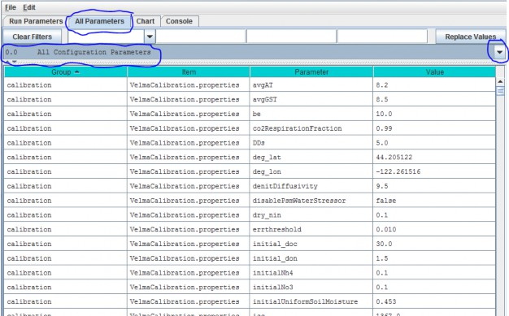
This view displays all Groups, Items, Parameters and Values for a simulator configuration in a single, scrollable view. To see a pop-up description of any Group, Item or Parameter in any cell, hover the mouse cursor over the cell.
Alternatively, these descriptions are summarized here in an Excel file located here:
Filename:
VELMA 2.0_Description of Calibration Parameters.xlsx;
Folder location:
VELMA Model\Supporting Documents\Excel Calibration Files
The All Configuration Parameters view contains an overwhelming amount of information, but the user has some search options for organizing and selecting things of interest. Experienced users may find that any of the first three search options, below, are useful for finding a specific parameter of interest in an existing simulator configuration.
- Option 1 - For some purposes it is useful to use the All Configuration Parameters view to locate, sort and select parameters of interest. For example, you can sort columns by double clicking the Group, Item, Parameter or Value column headers (turquois). You can also right click a particular cell and select "Set Column Filter to cellname", which will display values for the selected item across all cover types, soil types, disturbance type, etc. For example, this is useful if your watershed has more than one cover or soil type.
- Option 2 - Use the drop-down buttonimg(width="19" height="24" alt="image"src="public/Image_034.gif") p on the right side of the first filter field (above Group) toselect from the list of model configuration categories: startups, calibration, cover, disturbance,cellDataWriter, spatailDataWriter, soil, and weather (the meaning and use of these categories will be explained below, under sections 1.0 to 25.0).
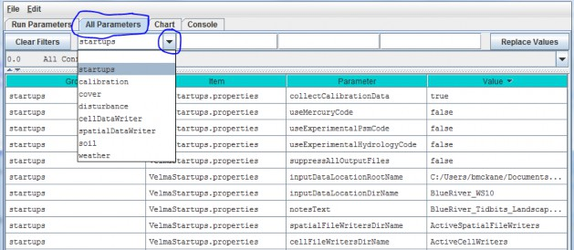
- Option 3 - Type a search string in the filter fields located above any of the four turquois column headers. Suppose you want to make sure the nitrogen fixation subroutine is turned off for a coniferous cover type. As the screenshot below shows, by typing ".*Conifer in the "Item" filter field and ".*NitrogenFixation" in the "Parameter" filter field. This search verified that the "useNitrogenFixation" parameter is turned off (false).
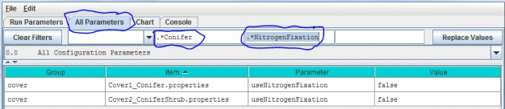
- Option 4 (recommended) - Although experienced users may find Options 1 - 3 handy for quickly locating specific Items, Parameters or Values, we recommend that all users stick with using sections 1.0 - 25.0 of the All Parameters TOC when configuring a new VELMA application. These sections collectively contain the same information listed under "All Configuration Parameters", but in asequence of steps organized to assist users in building new simulator configurations or editing existing ones. Details follow.
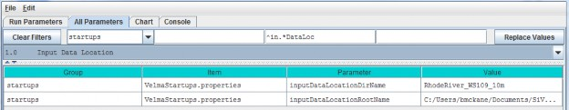
Parameter Definitions
| inputDataLocationDirName: |
The name of a subdirectory of the inputDataLocationRootName directory that contains the set of input data for a specific simulation run. When left unspecified or commented-out defaults to "". (I.e. VELMA will look for input data in the inputDataLocationRootName directory itself) |
| inputDataLocationRootName |
Fully-qualified path to the directory containing input data directories. When left unspecified or commented-out defaults to the "../data/" subdirectory of VELMA's installation directory. |
For the inputDataLocationRootName parameter, specify a directory name for the folder that contains the set of input data for a given simulation configuration. The inputDataLocationRootName is the path tothat directory.
2.0 - Results Data Location
For the initializeOutputDataLocationRoot parameter, specify the root directory under which VELMA will place simulation output files for a particular model run.

Parameter Definitions
| initializeOutputDataLocationRoot |
Root directory under which to place per-simulation-run directories. If this property is left unspecified per- simulation-run directories for output files will be placedunderneath a default root created in the ../data subdirectory of the VELMA simulator's installationdirectory. When specified this property must be a fully- qualified path name. Whitespace in the name does nothave to be escape-delimited or double-quoted and the "/" can (and should!) be used as the pathseparator for both Unix and Windows paths. EXAMPLE: initializeOutputDataLocationRoot = C:/MyVelmaResults/VelmaResultsRoot For the above example subdirectories for each VELMA simulator run are placed underneath the directory "C:/My VelmaResults/VelmaResultsRoot/" |
2.1 - Results Data Directory Name (Results data placed in directory with this name)
Specify a unique simulation filename in the value column for the run_index parameter.
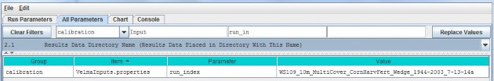
Parameter Definitions
| run_index |
Watershed Name (used as core name for the simulation model run data files). |
Use this parameter to specify a unique name for each simulation run that you do. For example, a useful run_indexname might include the watershed name, date and other identifiers that will make it easier to determine when asimulation configuration was built and how it differs from others. VELMA will use the run_index name to create:
- - the Simulation Run Name listed in the upper left corner of the Run Parameters GUI
- - the .XML file name that VELMA writes when the user saves a configuration file ("Ctrl-S", or "File/SaveConfiguration To VELMA XML File" using the menu at the top of the Run Parameters GUI). This XML filecontains all parameter names and values for the saved configuration. VELMA will not save this information if theuser does not save it in an XML file;
- - the name of the subdirectory (along with the full path) to which model output data files are written.
2.2 - Results Directory Logfile Names
Specify a filename in the Value column for the globalStateLogFilename parameter.
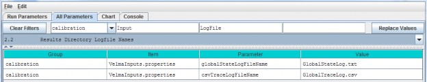
Parameter Definitions
| globalStateLogFilename |
The name of the global log file. The Global log file records console messages emitted during a simulation run. When left blank ("") or commented-out no global logfile is created. |
| csvTraceLogFilename |
The name of the trace log file. The trace log file records any low-level debugging messages emitted during a simulation run. When left blank ("") or commented-out notrace log file is created. |
VELMA will use the globalStateLogFilename to record the stream of runtime console messages (see Consoletab) generated during a simulation run. This is optional, but we recommend creating a globalStateFileNameto help identify any problems with the simulator configuration file. For example, the console messagesrecorded in the globalStateLogFilename provide a complete, sequential log of runtime information aboutsuccessful or unsuccessful loading of input files, activation of disturbance events (harvest, fertilization,etc.), saving results to output directories/files, and so on.
///// IMPORTANT NOTE /////
For important additional details on configuring, saving and understanding simulator results, please see Appendix 4: Overview of VELMA Simulator Output.
3.0 - Spatial Dimensions and DEM File
The VELMA simulator requires a DEM file in order to run a simulation. The simulator also assumes that all otherspatial data files (discussed below) contain spatial data with the same overall (row and column) and cell(pixel) size dimensions as the DEM file. We highly recommend that the DEM used for VELMA simulations bepre-processed using the JPDEM software, rather than by other available "flat-processor" software (see Appendix7).The VELMA simulation configuration parameter that specifies the name of the DEM file is:
| input_dem example: |
SmallWatershed_10m.asc |
The VELMA simulation configuration parameters that define the DEM file's location are:
| InputDataLocationRootName |
example: CoastalSite |
| inputDataLocationDirName |
example: C:\VelmaInputData |
Note that:
- Input_dem and inputDataLocationRootName are single file or directory names, while inputDataLocationDirName specifies a complete directory path.
- When a simulation is started, the DEM data is loaded from inputDataLocationRootName/inputDataLocationDirName/input_dem
- The DEM File's Dimensions are NOT Set Automatically by the Simulator or GUI
- The VELMA simulator does not read the DEM file's dimensions from the DEM file's header!
As part of parameterizing a VELMA simulation configuration, you must manually determine (usually by viewing theDEM file's header rows with a text editor) the DEM file dimensions, and set the corresponding VELMA simulationparameters (usually by using the JVelma GUI)
This table lists the header rows of a DEM (Grid ASCII) file and the corresponding VELMA simulation parameters:
| Grid ASCII Header Item |
VELMA Simulation Configuration Parameter |
| ncols |
Ncol |
| nrows |
Nrow |
| xllcorner |
cellOffsetX |
| yllcorner |
cellOffsetY |
| cellsize |
cell |
| nodata_value |
|
Sections 3.1 - 3.3 provide details on configuring these parameters for a DEM file.
Note: if you change the DEM file that a simulation is configured to use (i.e. you change the DEM filename for theinput_dem parameter) then you must ensure that all of the parameters above are updated as well.
3.1 - DEM Row and Column Counts
Specify values for the ncol and nrow parameters based on the DEM grid ASCII header items in thetable above.
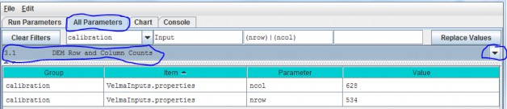
3.2 - DEM Cell Size (Assumes a square cell, i.e. Width and Height equal)
Specify the value of the cell parameter.
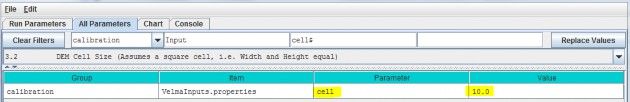
This describes the xy-dimension in meters of individual cells in the DEM grid ASCII file. In this example, eachcell is 10x10 meters. The choice of DEM cell size will depend upon the set of questions a user wishes toaddress. For example, applications focusing on the effect of riparian buffer width on nutrient export to streamsmay require relatively small cells (e.g., 10 meters), compared to applications focusing on ecosystem carbondynamics (e.g., 100 meters). Obviously, an application's total number of cells (and consequent simulation time)increases with the square of the ratio of alternative cell sizes - e.g., (100/10)2 = 100 times more cellsfor 10m versus 100m cell sizes. In any case, the specified cell size must be consistent with the DEM cell size.That is, the user cannot arbitrarily adjust the cell size parameter without telling VELMA to load a DEM havingthe same cell size (see All Parameters 3.0). Furthermore, the DEM used must be "flat- processed" for thespecified cell size using the JPDEM tool. The executable JPDEM.jar, a JPDEM user manual, and backgroundinformation (Pan et al. 2012) can be found here: VELMA Model\JPDEM_DEM Processor. The JPDEM user manual is alsoincluded in Appendix 7 of this manual.
3.3 - Watershed Outlet (X and Y coordinates are Column and Row indices)
Specify the value of the outx and outy parameters. These describe the watershed outlet cell's X andY coordinates (column index) relative to the DEM upper-left corner. The watershed outlet cell coordinates are determined using the JPDEM tool.

4.0 - Soil Types
VELMA requires information on key soil properties affecting hydrological and biogeochemical processes within astudy watershed. Whether single or multiple soil types are modeled within a watershed, you will need toestablish a soil type map and specify parameter values for a set of soil properties associated with each soiltype. The following steps will accomplish this:
- Establish a soil ID map describing the assignment of soil type IDs for every cell within the delineatedwatershed. See section 4.1 for details.
- Specify soil ID parameter names and values corresponding to those appearing in the soil ID map. See section 4.2for details.
- Specify soil depth values for the entire soil column and for each of four soil layers within the column. Seesection 4.3 for details.
soil hydraulic conductivity values controlling infiltration rate (Ks), and depth dependent changes invertical and lateral macropore flow, Ksv and Ksl, respectively. See section 4.4 for details.
4.1 - Soil ID Map File
The Soil ID Map File is specified by the soilParametersIndexMapFileName parameter. You can view and set itby selecting "4.1 Soil ID Map File" in the All Parameters outline drop-down selector:

Parameter Definitions
| soilParametersIndexMapFileName |
The file name of a spatial-explicit map of Soil Parameters uniqueIds. The data in this map file specifies the Soil Parameterization of a given pixel in the DEMmap. |
The file specified for the soilParametersIndexMapFileName is assumed to be a Grid ASCII (".asc") map filewith the same row and column dimensions as the simulation configuration's DEM file. Its contents should be integer values. Each cell's integer value should be the ID number of a soiltype.
Suppose the specified soil index map file contains three distinct integers for this map: 100, 105 and 110. TheVELMA simulation will expect the simulation configuration to include 3 soil parameterizations.
4.2 - Soil IDs and Names
Adding a Soil Parameterization to a simulation configuration using the following steps. Click the Edit Soil Parameterizations "Add a New Soil Parameterization" menu item:

Clicking "Add a New Soil Parameterization" opens the Soil Parameterization Name and ID dialog which looks likethis:

Enter a name and ID number for your new Soil Parameterization.
The name must be unique (i.e. no other Soil Parameterization already specified for this simulation configurationcan share the name you specify) and we recommend avoiding whitespace and punctuation characters (e.g. "(" and")") apart from the underbar ("_") character, which can be used instead of whitespace.
The ID number must be an integer, not already specified for any existing Soil Parameterization, and must matchone of the integers that appears in the Soil ID Map File.
As an example: Suppose we are adding the first Soil Parameterization ("100") for the hypothetical Soil ID MapFile mentioned above, and that ID "100" identifies cells that contain loamy sand.
Acceptable names (it's guaranteed unique because it's the first Soil Parameterization we're adding) might be:"Loamy_Sand" or "Soil_100_LoamySand", or something similar.
However, the only acceptable ID value is "100" - because the Unique Soil ID # of this parameterization is whatkeys it to those particular cells in the Soil ID Map File.
Once you've entered valid name and ID values in the Name and ID dialog, click the OK button. When you click OK,the VELMA GUI adds a new Soil Parameterization to the simulation configuration, and sets the All Parameterstab's filters to display only the parameters of the newly-added Soil Parameterization. Assuming we named our newSoil Parameterization "Loamy_Sand", with ID = "100", this is what the All Parameters tab would look like afterclicking OK:
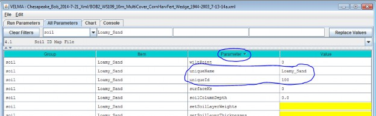
We did one other thing to get the above display: notice that the "Parameter" column is circled, and has a"down-arrow" indicating "descending-sort". After clicking OK to add the new Soil Parameterization, we clickedthe "Parameter" header field (twice), which sorts the table of properties on that column.
Now go to All Parameters 4.3 and 4.4 where parameter values for each soil name/ID will need to bespecified for total soil column depth, thickness of each of four soil layers, and hydrologic parametersaffecting vertical and lateral flow.
4.3 - Soil Depth Values
There are two methods, direct or indirect, that can be used to specify soil layer depths. The direct and indirectmethods have their own distinct set of parameters that are available to each soil type specified for a givensimulation configuration. Each method has its advantages. Thus, it is up to the user to decide which one to use.Either the direct or indirect set of parameters can be applied to a specified soil type, independent of whichset is applied in other specified soil types.
4.31 - Soil Depth Direct Specification
The direct method (optional) for setting a soil type's layer thicknesses uses a comma-separated list of valuesfor the setSoilLayerThicknesses parameter in millimeters for of each of 4 soil layers. For example:"500, 500, 500, 1500" (without the quote-marks) specifies the soil type's 4
layers as being 500 mm, 500 mm 500 mm, and 1500 mm thick, from layer 1 to layer 4, respectively.
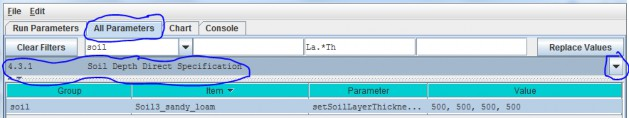
Parameter Definitions
| setSoilLayerThicknesses |
A comma-separated list of values specifying the thickness of each soil layer in millimeters. For example: "500 750 1000 1500" (without the quote-marks) specifiesthe soil's 4 layers as being 500 mm 750 mm 1000 mm and 1500 mm thick from layer 1 to layer 4 respectively.NOTE: This list of values may be left unspecified. When setSoilLayerThickness is unspecified thesoil's layer thicknesses are set by the combination of the soilColumnDepth and setSoilLayerWeightsparameters. When setSoilLayerThickness is specified the soilColumnDepth and setSoilLayerWeightsparameters are ignored. |
Thus, for the direct method, VELMA internally calculates the value for the soilColumnDepth parameter fromthe setSoilLayerThicknesses values specified for layers 1, 2, 3 and 4. When setSoilLayerThicknessesis not specified (left blank), the indirect method must be used to specify the soil layer thicknesses andsoil column depth (see All Parameters 4.32).
4.32 - Soil Depth Indirect Specification
As an alternative to the direct method described under All Parameters 4.31, you can instead use theindirect method for specifying a soil type's total soil column depth (parameter = soilColumnDepth, inmillimeters) and soil layer depth (parameter = setSoilLayerWeights, which is equal to the fraction "soillayer thickness / soil column depth".
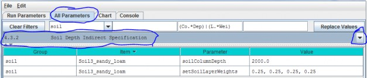
In this example the soil type named "SoilWedge1" has soilColumnDepth = 2000 mm, and setSoilLayerWeights= 0.25, 0.25, 0.25, 0.25 for layers 1, 2, 3 and 4, respectively. VELMA uses these values during asimulation to compute each soil layer's thickness (in millimeters) as:
layerThickness[iLayer] = soilColumnDepth * soilLayerWeight[iLayer].
Thus, the parameter values shown in the above example translate to soil layer thicknesses of 500 mm, 500 mm, 500mm, and 500 mm for each layer.
When setColumnDepth and setSoilLayerWeights are not specified (left blank), the direct method mustbe used to specify the soil layer thicknesses and soil column depth (see All Parameters 4.31).
4.4 - Soil Ks Values
VELMA simulates vertical and lateral water drainage using a logistic function that is intended to capture thebreakthrough characteristics of soil water movement. The logistic function provides a simple way (3 parameters)to capture the fast "switching" from low to high flow as water storage within a soil layer approaches fieldcapacity. VELMA offers two alternative methods, direct or indirect, for specifying these parameters. However,because the direct method is still under development, we recommend that users use the indirect method (see All Parameters 4.4.2).
4.4.1 - Soil Ks Values Direct Specification
Under development - please use the indirect method described in the next section.
4.4.2 - Soil Ks Values Indirect Specification
We refer to this method as an "indirect" because VELMA internally uses the specified soil Ks parametervalues to calculate the actual soil lateral and vertical hydraulic conductivity (Ks) values used during thesimulation run. You must specify values for 3 parameters for each soil type (in this example, "SoilWedge1"refers to a particular soil type / map unit).
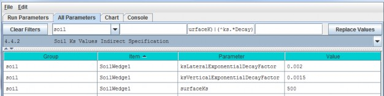
Parameter Definitions
| surfaceKs |
saturated hydraulic conductivity (Ks, mm/day) at the soil surface. For equations and parameterization information see Appendix 6.1 (Abdelnour et al.2011). |
| ksVerticalExponentialDecayFactor |
vertical Ks exponential decay factor (unitless)controlling the rate of decrease in vertical flow with depth. For equations and parameterization information see Appendix 6.1 (Abdelnour et al. 2011). |
| ksLateralExponentialDecayFactor |
lateral Ks exponential decay factor (unitless) controlling the exponential rate of decrease in lateral flow with depth. . For equations and parameterization information see Appendix 6.1 (Abdelnour et al. 2011). |
Calibration Notes
As a starting point, we recommend using the texture-specific values listed inTable 1 for "Surface Ks" and other physical characteristics of soil. Note that all the values in Table 1can vary significantly as a result of compaction, presence of hard pans, and other factors.
Based on the parameter values specified, VELMA computes the Ks lateral and Ks vertical flows (mm/day) per eachsoil layer as
Iterative calibration of the user-specified parameter values is generally required to obtain a good fit betweensimulated and observed stream discharge (mm/day) at the watershed outlet. At the end of each simulation, VELMAcalculates a Nash-Sutcliffe efficiency coefficient to assess the goodness-of-fit and reports the results in asimulation output file named "NashSutcliffeCoefficients.txt".See Nash-Sutcliffe wikipedia
for a general overview of the Nash-Sutcliffe efficiency coefficient and its application. Quoting that website:
"Nash-Sutcliffe efficiencies can range from -∞ to 1. An efficiency of 1 (E = 1) corresponds to a perfect match ofmodeled discharge to the observed data. An efficiency of 0 (E = 0) indicates that the model predictions are asaccurate as the mean of the observed data, whereas an efficiency less than zero (E < 0) occurs when theobserved mean is a better predictor than the model."
In general, a Nash-Sutcliffe coefficient of 0.7 is considered a good fit between simulated and observeddischarge. A value of 0.8 or greater is excellent, particularly for spatially-distributed ecohydrological modelslike VELMA that simulate the processes and flow paths by which water arrives at the watershed outlet (empiricalmodels do not have this requirement).
Advanced users can consult Appendix 6.1 (Abdelnour et al. 2011) for additional details concerning soil Ks equations, parameters and calibration.
4.5 - Soil Other Hydrologic Parameters
VELMA simulates the effect of several soil physical properties on water retention, rates of drainage and otherhydrological processes. These physical properties and their associated parameter names are
- Soil porosity (parameter name = porosityFraction): the fraction of void space (v/v) in a soil.
- Soil field capacity (parameter name = fieldCapacity): the amount of soil moisture (v/v) held insoil after excess water has drained away and the rate of downward movement has materially decreased
- Wilt Point (parameter name = wiltPoint): the minimal point of soil moisture (v/v) the plantrequires not to wilt.
- Bulk density (parameter name = bulkDensity): the dry weight of soil per unit volume of soil(g/cm3).
The following table provides typical values for these parameters for 11 soil texture classes(surface Ks, described above in All Parameters 4.4, is included here as well). The values listedare offered here as a starting point for model initialization. However, users should be aware thatthese values can vary dramatically as a result of compaction, presence of hard pans, and otherfactors.
Table 1. Physical characteristics of major soil texture classes (Pan et al. 2009, VELMA v1.0 user manual)
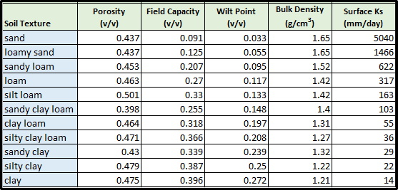
For each soil type in a watershed (we recommend just one texture type per soil type / mapping unit), you willneed to specify values for porosity, field capacity, wilt point and bulk density.
Use the All Parameters drop-down menu to select "4.5 Soil Other Hydrologic Parameters (only one of six soil typesis shown in the truncated screenshot below):

IMPORTANT INFORMATION FOR SECTIONS 5.0 - 25.0 OF THE ALL PARAMETERS TOC
VELMA version 2.0 simulates plant biomass and detritus much differently than VELMA version 1.0. Version 1.0 useda simplified Plant Soil Model (PSM, Stieglitz et al. 2006) to simulate plant biomass in each cell in aggregate -that is, leaves, stems and roots were lumped together in a single biomass pool (Abdelnour et al. 2011). Thislumped approach greatly simplified the structure and application of the model. Version 1.0 successfullysimulates important aspects of catchment hydrology and biogeochemistry (e.g., Abdelnour et al. 2011, 2013), butit does not simulate effects associated with phenological changes and disturbances that disproportionatelyaffect specific plant tissues - for example, leaf growth and senescence, defoliation events, selective removalof high or low C/N tissues via harvest or grazing, etc. These effects can have important implications forassessments involving water quality and quantity, carbon sequestration and other ecosystem services.
To address such effects, VELMA version 2.0 simulates nitrogen pools and fluxes for four plant tissue types:leaves, aboveground stems, belowground stems (>2 mm diameter), and fine roots (< 2 mm
diameter). This new Leaf-Stem-Root (LSR) submodel includes live (biomass) and dead (detritus) pools for each ofthe four plant tissue types.
A carbon/nitrogen (C/N) ratio must be specified for each plant tissue type so that VELMA can estimate carbonpools and fluxes corresponding to modeled nitrogen pools and fluxes. Although the model parameterization allowsdifferent C/N values for the biomass and detritus pools of the same tissue type, at present, the plant biomassand detritus pools for each tissue type must have the same C/N ratio to maintain mass balance of C and N pools.Specification of distinct C/N ratios per tissue type will be addressed in future versions.
Several other features have been built into the LSR submodel.
- A new nonlinear mortality subroutine simulates the loss of live plant biomass to detritus for all four tissues. See All Parameters section 12.0 for details. This replaces the mortality subroutine in VELMA version 1.0 described in Appendix 1, section A1.2.3.
- A modified version of the decomposition subroutine of Potter et al. (1993) is used to decompose detritus (leaf, stem and root) to humus (unidentifiable dead material). See All Parameters section 13.0 for details. This replaces the decomposition subroutine in VELMA version 1.0 described inAppendix 1, section A1.2.
- The "ET recovery" subroutine (Abdelnour et al. 2011) has been revised to use leaf biomass, rather than stand age, to simulate effects of forest regrowth on ET and streamflow. This subroutine can be applied to any cover type. See All Parameters section 13.0 for details. This replaces the decomposition subroutine in VELMA version 1.0 described in Appendix 6.2, section B2.
- A new subroutine describing age-related declines in transpiration of forest stands has been added. Abovegroundplant biomass is used as a proxy for stand age. See All Parameters section 10.3 for details.
The figure on the next page illustrates the structure of the new LSR submodel and its integration into theoverall Plant Soil Model. Additional Details on the LSR model structure, equations and parameterscan be found in "Appendix 1: Overview of VELMA'sLeaf-Stem-Root (LSR) Plant Biomass Submodel". We recommend reviewing this material before proceeding further, focusing on the LSR model structureand equations describing the various LSR nitrogen and carbon pools and fluxes.
Figure 1.
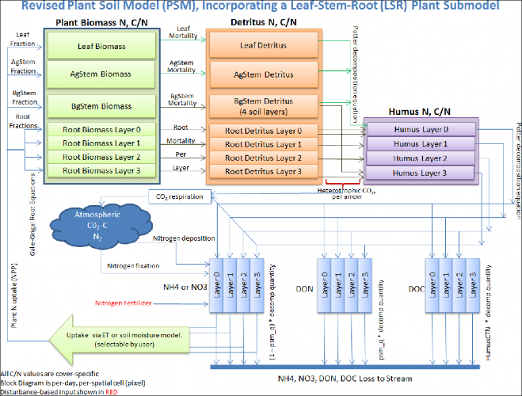
The User Manual package includes slides for a seminar describing the effectiveness of riparian buffers for protecting water quality in the Chesapeake Bay.
Filename: McKane_VELMA overview_OSU 2April2014_final.pptx Folder location: VELMAModel\Supporting Documents\VELMA Pubs & Talks
5.0 - Cover Types
VELMA version 2.0 includes two major changes to the vegetation submodel:
- Multiple cover types (forest, grassland, agricultural crops, etc.) within a watershed can now be modeled. Theversion 1.0 convention of one cover type per grid cell is maintained.
- Plant biomass for each cover type is modeled using four plant tissues - leaves, aboveground stems,belowground stems, and roots - rather than as a single biomass pool.
Sections 5.1 - 5.3, below, discuss procedures for initializing a simulator configuration for one or more covertypes.
Sections 5.4 through 5.7, below, discuss procedures for initializing a simulator configuration for the four plantbiomass pools.
5.1 - Cover ID Map File
The VELMA program requires a set of Cover Species parameters for each Cover ID number that occurs in the Cover IDMap File. Each Cover ID corresponds to a distinct, user-defined Cover Species (cover type) - for example,hardwood forest, grassland, corn cropland, and so forth.
This section describes the Cover ID map file and associated parameter specifications.
The Cover ID Map File is specified by the coverSpeciesIndexMapFileName parameter. You can view and set itby selecting "All Parameters 5.1 Cover ID Map File" from the All Parameters outline drop-down menu:

The file specified for the coverSpeciesIndexMapFileName is assumed to be a grid ASCII (".asc") map filewith the same row and column dimensions as the simulation configuration's DEM file. Its contents should beinteger values. Each cell's integer value should be the ID number of a cover type.
Suppose the specified cover index map file contains three distinct integers: 5, 7 and 9. For this map, the VELMAsimulation will expect the simulation configuration to include 3 Cover Species.
You will need to add a new Cover Species to a simulation configuration using the following steps:
- Click Edit Cover Species "Add a New Cover Species" menu item. This will cause a pop-up menuto appear (see step 2).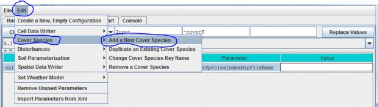
5.3 - Cover IDs and Names
[Note: All Parameters 5.2 - Cover Age Map File has been moved below section 5.3 to reflect therequired workflow]
Picking up from All Parameters 5.2, step (2)…
Enter a name and ID number for your new Cover Species. The name must be unique (i.e. no other Cover Species already specified for this simulation configuration canshare the name you specify) and we recommend avoiding whitespace and punctuation characters (e.g. "(" and ")")apart from the underbar ("_") character, which can be used instead of whitespace. The ID number must be an integer, not already specified for any existing Cover Species, and must match one of theintegers that appears in the Cover ID Map File.
As an example: Suppose we are adding the first Cover Species ("5") for the hypothetical Cover ID Map File mentioned above, andthat ID "5" identifies cells that contain Conifers. Acceptable names (guaranteed unique because this is the first Cover Species we're adding) might be: "Conifer" or"Cover_5_Conifer", or something similar. However, the only acceptable ID value is "5" - because the Unique Cover ID # of this parameterization is whatkeys it to those particular cells in the Cover ID Map File.
Once you've entered valid name and ID values in the Name and ID dialog, click the OK button. When you click OK, the VELMA GUI adds a new Cover Species Parameterization to the simulation configuration, andsets the All Parameters tab's filters to display only the parameters of the newly-added Cover Species. Assumingwe named our new Cover Species "Conifer", with ID = "5", this is what the All Parameters tab would look likeafter clicking OK: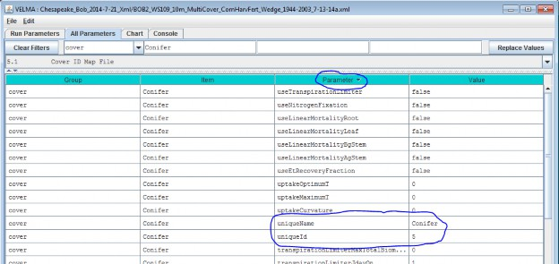
We did one other thing to get the above display: notice that the "Parameter" column is circled, and has a"down-arrow" indicating "descending-sort". After clicking OK to add the new Cover Species, we clicked the"Parameter" header field (twice), which sorts the table of properties on that column.
5.2 - Cover Age Map File
[Note: section 5.2 appears after section 5.3 to reflect the required workflow for developing a Cover Age Map fileand associated parameter values]
To enable scheduling of disturbance events during a simulation (per All Parameters section 24.0), VELMA needs tokeeps track of changes in the age (years) of vegetation from one calendar year to another, or as a result ofdisturbances that can reset stand age to 0 (e.g., by clearcutting) or to some other age (e.g., by selectivethinning of old trees that establishes understory vegetation as the new dominant age class). Note that cover agemaps can be can be applied to cover types other than forests, e.g., rangeland vegetation that may have a more diverse mixt ofspecies than vegetation recovering from a recent fire.
After you have established a Cover ID Map file (section 5.1) and specified Cover IDs and names for each CoverSpecies (section 5.3, above!), you will need to set up a Cover Age Map file and specify the file name.
The Cover Age Map file name is specified by the coverAgeMapFileName parameter. You can view and set it byselecting "All Parameters 5.2 Cover Age Map File" from the All Parameters outline drop-down menu:

The file specified for the coverAgeMapFileName is assumed to be a grid ASCII (".asc") map file with thesame row and column dimensions as the simulation configuration's DEM file. Its contents should be integer valuesreflecting the age of vegetation (Cover Species) occupying each grid cell. Each cell's integer value should bethe ID number of a Cover Species. For example, an age of 0 could be assigned to row crops (corn, soybeans,etc.). Cells in a forest landscape might range in age from 0 (newly burned or planted) to many centuries. TheVELMA team has used biomass-to-age and tree height-to-age relationships to establish Cover Age Maps.
5.4 - Cover Carbon-To-Nitrogen Ratios
This section is concerned with initializing plant tissue C/N ratios for plant biomass and detritus associatedwith leaves, aboveground stems (AgStem), belowground stems (BgStem) and roots. Thus, a total of eight C/N (CtoN)ratios must be specified for each cover type. Only one cover type (CoverForest_1) is displayed for the examplebelow. In addition, a C/N ratio must be specified for the humus pool.

5.5 - Cover Uniform-Cell Initialization Amounts
Using the All Parameters drop-down menu, select "5.5 Cover Uniform-Cell Initialization Amounts". Theparameters shown are used to specify initial pool sizes (g C / m2) that VELMA
requires at the start of each simulation run. Values must be specified for all plant biomass pools, detrituspools and humus pool associated with each cover type. The example below shows just one cover type, but the samelist of 9 parameters repeats for each additional cover type that has been has been for the simulationconfiguration.
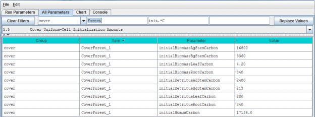
"Cover Uniform-Cell Initialization Amounts" refers to the fact that all grid cells assigned to a particular covertype will have the same initial values for plant biomass, detritus and humus. Obviously this method will notwork for watersheds where there is significant spatial variability in pool sizes (e.g., where forest stands varyin age). In these situations, you can use All Parameters menu item "24.3 Disturbance Items Spatial Specifiers"to establish spatially variable initialization amounts for any or all pools.
5.6 - Cover Gale-Grigal Root Parameter
Select section 5.6 from the All Parameters drop-down menu to specify Gale-Grigal root parameter values for eachcover type in your watershed:
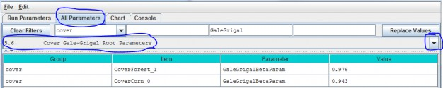
Parameter Definitions
| GaleGrigalBetaParam |
The Beta term for this cover type's root vertical distribution. For the root distributionfunction of Gale Grigal (1987): roots[D] = 1 - B^D, where B = GaleGrigalBetaParam value (assigned here) D =layer depth |
References
Gale, M. R., & Grigal, D. F. (1987). Vertical root distributions of northern tree species in relation tosuccessional status. Canadian Journal of Forest Research, 17(8), 829-834.
Jackson, R. B., Canadell, J., Ehleringer, J. R., Mooney, H. A., Sala, O. E., & Schulze, E. D. (1996). Aglobal analysis of root distributions for terrestrial biomes. Oecologia, 108(3), 389-411.
Calibration Notes:
VELMA uses the method of Gale and Grigal (1987) to vertically distribute a cover type's specified total root biomass. This results in an exponentially decreasing amount of root biomass per soil layer. See Appendix 6.2 section A1.2.6 (Abdelnour et al. 2013) for a description of VELMA's implementation of the Gale-Grigal root distribution function.
Jackson et al. (1996) used the Gale-Grigal method to characterize rooting patterns for terrestrial biomesglobally. In the absence of measured data to calibrate GaleGrigalBetaParam for your site's cover types,we recommend consulting Jackson et al.'s Table 1and Figure 1:
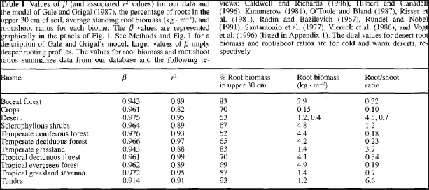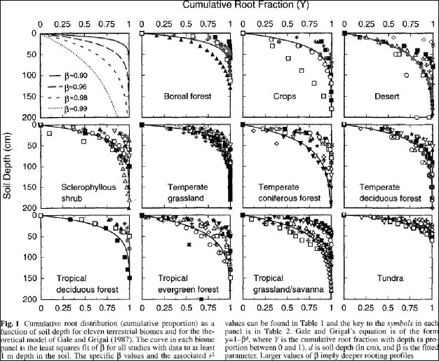
5.7 - Cover Leaf Stem and Root Pool Parameters
Select section 5.7 from the All Parameters drop-down menu to specify leaf stem and root pool parameter values foreach cover type in your watershed (do this for each cover type):
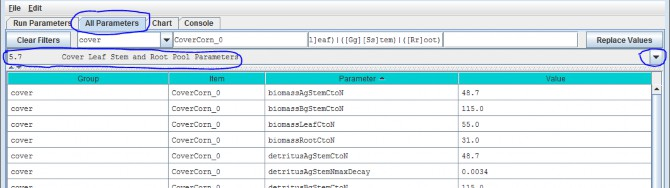
Parameters in this section cover the Leaf, Stem and Root pool C/N ratios, initial values, mortalityparameterizations and uptake fractions. Because each biomass or detritus leaf, stem and root pool has its ownset of parameters for these subjects, this list of parameters is relatively extensive.
Parameter Definitions
| biomassLeafCtoN |
The Carbon-to-Nitrogen ratio of the cover type's Leaf biomass pool. |
| biomassAgStemCtoN |
The Carbon-to-Nitrogen ratio of the cover type's AgStem biomass pool. |
| biomassBgStemCtoN |
The Carbon-to-Nitrogen ratio of the cover type's BgStem biomass pool. |
| biomassRootCtoN |
The Carbon-to-Nitrogen ratio of the cover type's Root biomass pool. (All layers ofthis pool use the same CtoN ratio value.) |
| detritusLeafCtoN |
The Carbon-to-Nitrogen ratio of the cover type's Leaf detritus pool. |
| detritusAgStemCtoN |
The Carbon-to-Nitrogen ratio of the cover type's AgStem detritus pool. |
| detritusBgStemCtoN |
The Carbon-to-Nitrogen ratio of the cover type's BgStem detritus pool. (Alllayers of this pool use the same CtoN ratio value.) |
| detritusRootCtoN |
The Carbon-to-Nitrogen ratio of the cover type's Root detritus pool. (All layersof this pool use the same CtoN ratio value.) |
| detritusLeafNmaxDecay |
Maximum decay rate for Potter decomposition of Leaf detritus pool's Nitrogen amount. |
| detritusAgStemNmaxDecay |
Maximum decay rate for Potter decomposition of AgStem detritus pool's Nitrogen amount. |
| detritusBgStemNmaxDecay |
Maximum decay rate for Potter decomposition of BgStem detritus pool's Nitrogen amount. |
| detritusRootNmaxDecay |
Maximum decay rate for Potter decomposition of Root detritus pool's Nitrogen amount. |
| initialBiomassLeafCarbon |
The amount of biomass (in grams of Carbon)placed in the Leaf biomass pool of each cell of this cover type at initialization start. |
| initialBiomassAgStemCarbon |
The amount of biomass (in grams of Carbon) placed in the AgStem biomass pool of each cell of this cover type at initialization start. |
| initialBiomassBgStemCarbon |
The amount of biomass (in grams of Carbon)placed in the BgStem biomass pool of each cell of this cover type at initialization start. |
| initialBiomassRootCarbon |
The amount of biomass (in grams of Carbon) placed in the Root biomass pool of each cell of this cover type at initialization start. |
| initialDetritusLeafCarbon |
The amount of detritus (in grams of Carbon) placed in the Leaf detritus pool of each cell of this cover type at initialization start. |
| initialDetritusAgStemCarbon |
The amount of detritus (in grams of Carbon) placed in the AgStem detritus pool of each cell of this cover type at initialization start. |
| initialDetritusBgStemCarbon |
The amount of detritus (in grams of Carbon) placed in the BgStem detritus pool of each cell of this cover type at initialization start. |
| initialDetritusRootCarbon |
The amount of detritus (in grams of Carbon) placed in the Root detritus pool of each cell of this cover type at initialization start. |
| etRecoveryFractionMinimumLeafBiomassC |
The minimum amount of leaf biomass (in gC/m^2) required to compute an ET recovery fraction. Whenever leaf biomass is less than this amount, the ET recoveryfraction is forced to the etRecoverFractionMinimumValue. See Section 10.2.1 ET Recovery Parameters. |
| mortalityLeafAnnualFraction |
The fraction of the Leaf biomass Pool annual mortality amount actually subtracted from that pool per day of senescence. The default value for this fraction is1.0 (i.e. the full per-day amount) and the valid range is [0.0 to 1.0]. Warning! Users unfamiliar with thisparameter's behavior should leave it set to the default value of 1.0. |
| mortalityLeafDenominatorCoefficient |
The mortality equation's denominator coefficient value for the biomass Leaf pool. |
| mortalityLeafExponentialCoefficient |
The mortality equation's exponential coefficient value for the biomass Leaf pool. |
| mortalityLeafNumeratorCoefficient |
The mortality equation's numerator coefficient value for biomass Leaf pool. |
| mortalityAgStemAnnualFraction |
The fraction of the AgStem biomass Pool annual mortality amount actually subtracted from that pool per day of senescence. The default value for this fraction is1.0 (i.e. the full per-day amount) and the valid range is [0.0 to 1.0]. Warning! Users unfamiliar with thisparameter's behavior should leave it set to the default value of 1.0. |
| mortalityAgStemDenominatorCoefficient |
The mortality equation's denominator coefficient value for the biomass AgStem pool. |
| mortalityAgStemExponentialCoefficient |
The mortality equation's exponential coefficient value for the biomass AgStem pool. |
| mortalityAgStemNumeratorCoefficient |
The mortality equation's numerator coefficient value for the biomass AgStem pool. |
| mortalityBgStemAnnualFraction |
The fraction of the BgStem biomass Pool annual mortality amount actually subtracted from that pool per day of senescence. The default value for this fraction is1.0 (i.e. the full per-day amount) and the valid range is [0.0 to 1.0]. Warning! Users unfamiliar with thisparameter's behavior should leave it set to the default value of 1.0. |
| mortalityBgStemDenominatorCoefficient |
The mortality equation's denominator coefficient value for the biomass BgStem pool. |
| mortalityBgStemExponentialCoefficient |
The mortality equation's exponential coefficient value for the biomass BgStem pool. |
| mortalityBgStemNumeratorCoefficient |
The mortality equation's numerator coefficient value for the biomass BgStem pool. |
| mortalityRootAnnualFraction |
The fraction of the Leaf biomass Pool annual mortality amount actually subtracted from that pool per day of senescence. The default value for this fraction is1.0 (i.e. the full per-day amount) and the valid range is [0.0 to 1.0]. Warning! Users unfamiliar with thisparameter's behavior should leave it set to the default value of 1.0. |
| mortalityRootDenominatorCoefficient |
The mortality equation's denominator coefficient value for the biomass Root pool. |
| mortalityRootExponentialCoefficient |
The mortality equation's exponential coefficient value for the biomass Root pool. |
| mortalityRootNumeratorCoefficient |
The mortality equation's numerator coefficient value for the biomass Root pool. |
| useLinearMortalityLeaf |
When true, leaf mortality is computed using a simple linear function. When false (default)mortality is computed via a logistic function. |
| useLinearMortalityAgStem |
When true, AgStem mortality is computed using a simple linear function. When false (default) mortality is computed via a logistic function. |
| useLinearMortalityBgStem |
When true, BgStem mortality is computed using a simple linear function. When false (default) mortality is computed via a logistic function. |
| useLinearMortalityRoot |
When true, Root mortality is computed using a simple linear function. When false (default)mortality is computed via a logistic function. |
| nppToBiomassLeafNfraction |
The fraction of total daily NPP for a cell of this cover type allotted to the biomass Leaf pool. |
| nppToBiomassRootNfraction |
The fraction of total daily NPP for a cell of this cover type allotted to the biomass Root pool. |
| nppToBiomassAgStemNfraction |
The fraction of daily NPP ALOTTED TO STEM POOLS for a cell of this cover type allotted to the biomass AgStem pool. The remaining NPP allotted to stem pools goes to the biomass BgStem pool. NOTE: Total dailyNPP is reduced by the fractions for leaf and root pools first. Any remainder is the daily NPP allotted to stempools. |
Calibration Notes
At this stage (section 5.7) of your simulation configuration, don't try to specify values for all the parameterslisted above. For now, just focus on the initial C and N pools for plant biomass anddetritus (highlighted in yellow, above). To specify initial C and N stocks(g/m2) for these pools, we recommend that you consultAppendix 1 for an overview of VELMA's LSR submodel and it C and N pools and fluxes.Filling in C and N values for the various pools shown would be a good start. Remember to document data sourcesas you go.
Methods for specifying parameter values for NPP (plant uptake) allocation, plant biomass mortality, and detritusdecay (decomposition) rates, and NPP are discussed in subsequent sections:
- N uptake (NPP): Section 11.0
- Mortality: Section 12.0
- Decomposition: Section 13.0
5.7.1 - Cover Leaf Pool Parameter
Select section 5.7.1 from the All Parameters drop-down menu to specify cover-specific parameter values for leafbiomass and detritus. See 5.7 above for the parameter descriptions.
5.7.2 - Cover Above-Ground Stem Pool Parameters
Select section 5.7.1 from the All Parameters drop-down menu to specify cover-specific parameter values foraboveground stem biomass and detritus. See 5.7 above for the parameter descriptions.
5.7.3 - Cover Below-Ground Stem Pool Parameters
Select section 5.7.1 from the All Parameters drop-down menu to specify cover-specific parameter values forbelowground stem biomass and detritus. See 5.7 above for the parameter descriptions.
5.7.4 - Cover Root Pool Parameters
Select section 5.7.1 from the All Parameters drop-down menu to specify cover-specific parameter values for rootbiomass and detritus. See 5.7 above for the parameter descriptions.
6.0 - Weather Model
The Default Weather Model provides uniform precipitation and air temperature values for all cells of asimulation's delineated watershed for each day of a simulation run, and includes a simple snow model.
A Default Weather Model is Provided Automatically in New Simulation Configurations
When you create a new simulation configuration in the VELMA GUI (Edit "Create a New, EmptyConfiguration"), it automatically contains parameters for the default weather model. This weather model'smodelClass, uniqueName and uniqueId parameters are preset to valid, default values. You maychange those values if you wish, but there is no need to do so and we advise
you to leave them alone. You must provide the model with the names of data files for precipitation and airtemperature driver data, and parameterize the snow model.
You can focus the All Parameters tab's parameters table to various aspects of the simulation configuration'sweather model by selecting them in the tab's drop-down selector.
To view the complete core weather model parameterization, select "6.0 Weather Model":
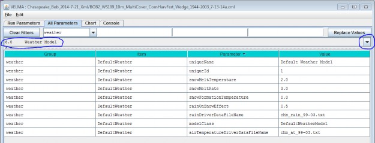
You Must Provide the Weather Model with Rain and Air Temperature Driver Files.
The rain and air temperature driver files share the same format requirements: one floating-point value per line,with exactly one line for each day between the first day of the year specified by the simulation configuration'sforcing_start value, and the last day of the year specified by the simulation configuration's forcing_end value.For example, if a forcing start/end range of [2000 to 2001] would require each driver file to have 731 lines ofdata (corresponding to 366 + 365 days per year, accounting for the leap year), with one value per line.
You may omit the path of the driver file names you specify. The Velma simulator then assumes the file's locationis specified by the simulation configuration's input data location settings (set the outline selection to "1.0Input Data Selection" to review or set the input location). You may also provide a fully-qualified path + namefor a driver file. If you do, be sure to use "/" (forward-slash) characters as path-separators.
Select "6.1 Weather Rain Driver File" to focus the parameters table on the weather model's
rainDriverDataFileName parameter.
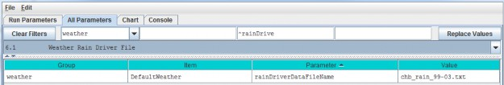
Each value in this file represents a day's precipitation (in millimeters) at each cell in simulation's thedelineated watershed. Because of the snow model, some of this precipitation may be rain, and some may be snow.The parameterization of the snow model determines the amounts of both.
Select "6.2 Weather Air Temperature Driver File" to focus the parameters table on the weather model'sairTemperatureDriverFileName.
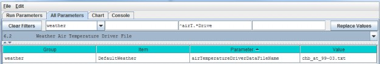
Each value in this file represents a day's average air temperature (in degrees Centigrade) at each cell in thesimulation's delineated watershed.
The Snow Model Determines the Rain / Snow Mixture for the Precipitation Driver Value
The four parameters of the snow model determine how much of a given day's precipitation falls as rain or as snow,and how fast snow on the ground is converted to surface water.
| snowFormationTemperature |
The air temperature (in degrees C) below which theday's precipitation is counted as snow. At and above this temperature, it is counted as rain. |
| snowMeltTemperature |
The temperature above which any available snow begins to melt. |
| snowMeltRate |
The rate at which melting snow becomes surface water. |
| rainOnSnowEffect |
Used in conjunction with the snowMeltRate to determine the amount of snow that melts into surface water. |
A Summary Description of the Snow Model's Behavior
For each day of a simulation run, the daily air temperature and precipitation values are taken together with theabove snow model parameters and daily values are calculated for the following: Rain, Snow, Snow Depth andSnow Melt.
When air temperature is at or above the snowFormationTemperature, all the day's precipitation is countedas rain and becomes the day's Rain value. If the air temperature is also greater than thesnowMeltTemperature, the amount of snow that melts is calculated using the following equation:
where airT and rain are the day's air temperature and precipitation values respectively.
If there has been snow deposited into the Snow Depth value on previous simulation days (see below) the amount ofsnow melted is "deducted" from that value and becomes additional "rain" for the day. If the melted amount thatis computed exceeds the amount of snow depth, the entire amount (but no more) is "deducted".
When air temperature is below the snowFormationTemperature parameter, all the day's precipitation iscounted as snow and becomes the day's Snow value. The day's Snow mount is also added to the Snow Depth value.
6.3.1 - Weather Model Coefficients Files (Only Spatial Weather)
VELMA's default weather model (described under section 6.0 - 6.2) does not address spatial variations intemperature and precipitation associated with topographic features - elevation, slope, aspect and cold airdrainages.
VELMA's optional Spatial Weather Model provides differing precipitation and air temperature values foreach cell of a simulation's delineated watershed for each day of a simulation run. It includes the same simplesnow model as the Default Weather Model.
CAUTION!
The Spatial Weather Model is still somewhat experimental and undergoing testing and refinement.p Also, it requires more effort to configure/parameterize than the Default Weather Model. For both of these reasons, we currently recommend using only the Default Weather Model unless you must have the more complex behavior that the Spatial Weather Model provides, e.g, for mountainous terrain.
You Must Explicitly Specify Activation of the Spatial Weather Model
When you create a new simulation configuration, the VELMA GUI automatically adds a Default Weather Modelparameters group to it. If you wish to use the Spatial Weather Model instead, Click the Edit "SetWeather Model "Spatial Weather Model" menu item:

When you set the weather model to "Spatial Weather Model", the VELMA GUI removes any pre-existing weather modelparameters and adds the parameters group for the Spatial Weather Model.
You can focus the All Parameters tab's parameters table to various aspects of the simulation configuration'sweather model by selecting them in the tab's outline drop-down selector.
The VELMA GUI automatically provides valid default values for the Spatial Weather Model's
uniqueId, uniqueName and modelClass parameters. You may leave these as they are initially set. Toview the complete core weather model parameterization, select "6.0 Weather Model":

You Must Provide the Weather Model with Rain and Air Temperature Driver Files
The Spatial Weather Model derives daily rain and air temperature values for every cell in the simulationwatershed by applying functions to the daily rain and air temperature values of one specific cell (the "Primary"or "Prime" Cell) within the watershed. You must provide the data file names for rain and air temperature dataobserved for this Prime Cell, as well as its x-and-y coordinates as part of the Spatial Weather Model'sparameterization.
Set the xPrimeCell and yPrimeCell parameter's values to the Prime Cell's x (column) and y (row)location.
Set the rainDriverDataFileName and airTemperatureDriverDataFileName to the file names of theprecipitation and air temperature files, respectively.
You may omit the path of the driver file names you specify. The Velma simulator then assumes the file's locationis specified by the simulation configuration's input data location settings (set the outline selection to "1.0Input Data Selection" to review or set the input location). You may also provide a fully-qualified path + namefor a driver file. If you do, be sure to use "/" (forward-slash) characters as path-separators.
The rain and air temperature driver files share the same format requirements: one floating-point value per line,with exactly one line for each day between the first day of the year specified by the simulation configuration'sforcing_start value, and the last day of the year specified by the simulation configuration's forcing_endvalue. For example, if a forcing start/end range of [2000 to 2001] would require each driver file to have731 lines of data, with one value per line.
You Must Provide Files of Coefficients for Precipitation and Air Temperature Calculations The Spatial WeatherModel calculates the day's precipitation and air temperature values for a given cell location by applying aprecipitation or air temperature function to the day's driver precipitation or air temperature value. Thesefunctions map/modify the "seed" value at the Prime Cell to derive a value for the other cells. The functionstake into account the cell's
elevation, flow accumulation and heat index values, and the equations involved require per- month coefficientsfor each term of their equations.
You Must provide the file names (or optionally full path + names) of one file for rain (precipitation) equationcoefficients and one file of air temperature coefficients.
NOTE
Determining the values for precipitation and air temperature coefficients requires detailed knowledge of the equations defining the Spatial Weather Model's behavior.p For additional information concerning theory and procedures for developing statistical coefficients for VELMA's spatial climate model see Appendix 5: Generating daily temperature and precipitation grids for running VELMA: development of statistical models based on monthly PRISM data.
The Precipitation Coefficients File
A comma-separated values (.csv) file containing a table of coefficients for the spatial weather model'sprecipitation equation. The file must contain 13 rows of 6 comma-separated values (columns) each.
The first row is a header row, and the remaining 12 rows provide values for the equation's a, b, c, d and ecoefficients for each month of the year.
Here is an example table of values:

and here are the lines from the corresponding .csv data file:
month,a,b,c,d,e
1,259.751,0.011833,5.24E-05,-3.94717,-0.09685
2,241.5404,0.006131,6.10E-05,-5.15183,0.892817
3,210.8037,0.037236,4.62E-05,-4.20577,0.951439
4,96.40946,0.080534,7.44E-06,-1.44569,1.250961
5,88.34944,0.014202,3.06E-05,-0.20094,1.259266
6,53.51838,0.048195,9.53E-06,0.873204,1.297879
7,13.08702,0.023576,2.49E-06,0.686924,0.685529
8,21.89397,7.78E-05,6.23E-06,-0.00893,0.199088
9,70.03036,0.007598,2.39E-05,-0.00868,0.959202
10,124.4332,-0.00302,3.59E-05,-1.16562,0.890761
11,316.075,0.072349,4.32E-05,-4.40543,1.247633
12,290.7049,0.034712,4.62E-05,-4.46288,0.495517
The Air Temperature Coefficients File
A comma-separated values (.csv) file containing a table of coefficients for the spatial weather model's airtemperature equation. The file must contain 13 rows of 10 comma-separated values (columns) each.
The first row is a header row, and the remaining 12 rows provide values for the equation's a - j and xcoefficients for each month of the year.
Here is an example table of values:

And here are the lines from the corresponding .csv data file:
month,b,c,d,e,g,h,i,j,x
1,0.007047,0.018444,2.75E-06,-1.12696,-0.00434,0.012177,-1.60E-05,6.606466,679.15
2,0.006148,0.065628,2.75E-06,1.024448,-0.00545,0.037565,-1.50E-05,8.958362,684.28
3,0.001492,0.041412,1.47E-06,5.402304,-0.00656,0.039723,-5.70E-06,11.03547,699.67
4,-0.00239,0.053357,2.53E-07,10.24696,-0.00697,0.043574,6.13E-06,13.99039,818.03
5,0.004219,0.059169,1.86E-06,8.916032,-0.00707,0.056038,-1.20E-05,16.80074,698.66
6,-0.00222,0.046785,-1.30E-06,16.98087,-0.00684,0.078366,1.33E-05,20.81386,827.75
7,-0.00123,0.004955,-2.50E-06,19.38073,-0.00633,0.073345,-1.90E-06,23.54351,814.57
8,-0.00023,0.00407,-2.60E-06,18.81907,-0.00585,0.092057,9.03E-06,23.53079,836.26
9,0.001476,-0.0342,-2.30E-06,14.80655,-0.00612,0.047614,7.60E-06,20.83291,791.89
10,-0.00023,0.018716,-1.20E-06,11.70249,-0.00641,0.112236,-8.60E-06,16.77907,819.27
11,0.002002,0.014029,-2.60E-07,3.771477,-0.00556,0.027117,-1.40E-05,9.412401,745.95
12,0.00697,0.047469,2.59E-06,-1.28579,-0.00399,0.007256,-1.70E-05,6.096779,674.34
The Spatial and Default Weather Model Both Employ the Same Snow Model Parameterization of the Spatial WeatherModel's snow (sub)model is exactly the same as that of the Default Weather Model's. See the Default WeatherModel's documentation for the details.
The difference between the two is that the Spatial Weather Model first calculates the precipitation and airtemperature values for the specific cell before applying the snow model's mechanism to determine theday's rain, snow, snow depth and snow melt values. In contrast, the Default Weather Model presents the same(driver) precipitation and air temperature values to the snow model at every cell location in the simulation'swatershed.
6.4 - Latitude/Longitude
The VELMA simulator computes a daily solar radiation value for the latitude and longitude specified by thedeg_lat and deg_lon parameter values. Set the values of these parameters to the latitude andlongitude of your simulation configuration's location. Use decimal degrees, NOT "degrees, minutes, seconds"format for the values. For example:

6.5 - Solar Radiation
In addition to latitude and longitude, VELMA's solar radiation equation requires values for the followingparameters:
| isc |
Solar Constant. |
| sr1 |
Constant parameter 1 of solar radiation uptake function. |
| sr2 |
Constant parameter 2 of solar radiation uptake function. |
| srth |
Solar radiation threshold. |
The VELMA GUI automatically provides default values for each of these parameters; these may be acceptable foryour simulation location.
NOTE: Solar radiation parameters are intended for use in computing plant nitrogen uptake and snow melt. Althoughthese modeling capabilities are under development, VELMA 2.0 currently does not include them. That being thecase you may leave the solar radiation parameters set to their default values without affecting your simulationrun results.
6.6 - Soil Layer Temperature
Soil temperature is used in many of VELMA's subroutines, for example, to compute rates of soil organic matter decomposition, plant nitrogen uptake, nitrification, and many other temperature sensitive processes. Documentation describing the equations and methods for computing subsurface temperature per VELMA's four soil layers can be found in Appendix 6.2 section A1.1.
For the soil temperature subroutine to work properly for your simulation site, you need to:
- provide a daily mean air temperature file (see "Required Input Data Files for VELMA Simulations")
- specify values for total soil depth and soil bulk density (see All Parameters sections 4.3 and 4.5,respectively)
- and specify the average annual air temperature for your site (avgAT), as follows:
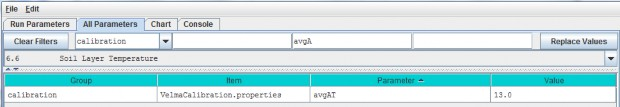
7.0 - Initialize Uniform Water Amount per Cell (link to All Parameters TOC) Because soil moisture can vary significantly in space and time, it would be extremely difficult tospecify realistic soil moisture amounts for every soil layer in every cell within a watershed. A
more practical method is to specify a uniform amount of initial soil moisture for all layers and
cells, and then allow these initial values to adjust to realistic levels during a "spin up" period of years priorto the simulated years of interest.
By default, VELMA set the initial water content of all cells and layers to the field capacity value specified foreach soil type. , i.e., when the parameter initialUniformSoilMoisture is set to its default value of -1(if it is set to any other value, reset it to -1).
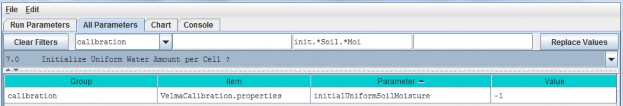
Calibration Notes
We recommend using this default option, and that you also discard the first year of simulation results, andpossibly more, until soil moisture levels have sufficient time to "spin up" to your site's observed conditions.Shallow soils may adjust within a year or two, whereas deep soils may require decades before simulatedgroundwater tables reach observed levels. You will need to experiment with this to determine how many spin-upyears are required.
To set up a spin-up period, you can instruct VELMA to perform one or more simulation "loops" for the set of yearsincluded in the climate input files. To do this, specify the desired "Number of Loops" in Run Parameters tab ofthe simulator's GUI. For the example shown below, 3 loops are specified, meaning that the 5 years (1999 - 2003)of available climate driver data will be repeated (looped) 3 times for this simulation.
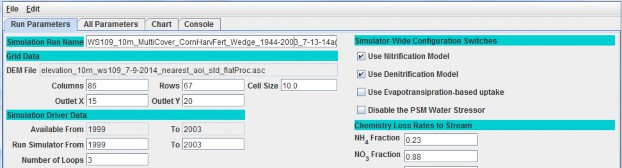
Thus, VELMA will generate 3 loops x 5 years = 15 years of model output, for which the first 2 loops (10 spin-upyears) can be discarded.
An alternative method to accomplish the same thing would be to edit the temperature and precipitation driverfiles, such that a copy of the years you want to use for spin-up purposes appears at the beginning of theoriginal climate record (remember to rename the edited climate driver files to reflect the spin-up number ofyears).
8.0 - Chemistry Pools (Dissolved C and N) (link to All Parameters TOC) VELMA simulates ecosysteminputs, outputs and internal cycling of four pools of dissolved nitrogen and carbon in soil: ammonium(NH4), nitrate (NO3), dissolved organic nitrogen (DON)
and dissolved organic carbon (DOC).
Sections 8.1 and 8.2, below, describe the specification of initial pools and calibration of parameterscontrolling leaching losses to streams. Subsequent sections describe additional processes affecting inputs andoutputs from these dissolved C and N pools.
8.1 - Chemistry Amounts for uniform cell-initialization
Initial soil pools (g N / m2 or g C / m2) of NH4, NO3, DON and DOC can be viewed and specified byselecting "8.1 Chemistry Amounts for uniform cell-initialization" from the All Parameters drop-down menu. Thevalues specified should represent the sum of all 4 soil layers (total soil column) averaged across thewatershed.

Parameter Definitions
| initial_doc |
Initial DOC pool amount (per cell) in gC/m2. |
| initial_don |
Initial DON pool amount(per cell) in gN/m2. |
| initial_Nh4 |
Initial NH4 pool amount (per cell) in gN/m2. |
| initial_No3Initial |
NO3 pool amount (per cell) in gN/m2. |
Calibration Notes
On day 1 of a simulation, VELMA will use the specified parameter values to calculate the fraction of eachnutrient's total pool to allocate to each of the four soil layers. This is done uniformly for all grid cells onday 1.
With some effort, VELMA can be calibrated to simulate spatial variability in C, N, H2O pools and fluxes.With a well-calibrated parameter set, initially uniform nutrient pool values will begin to adjust and, after asufficient spin-up time, more closely match spatial and temporal patterns of observed nutrient pools (McKane2014).
Section 7.0 describes methods for setting up an appropriate spin-up period for allowing initialized soil moisturelevels to adjust to a site's biophysical conditions. The same spin-up method applies for all model pools andfluxes, including stream chemistry.
Alternatively, you can use a more advanced method for specifying initial nutrient pool values that consider spatial variability in soil types, and cover species type and age. Details can be found in Appendix 3: Creating Initial ASCII Grid Chemistry Spatial DataPools.
References
The User Manual package includes slides for a seminar describing the effectiveness of riparian buffers for protecting water quality in the Chesapeake Bay.
Filename: McKane_ORD GI webinar_7-30-14 Final.pptx
Folder location: VELMA Model\Supporting Documents\VELMA Pubs & Talks
8.2 - Chemistry Water Loss Fractions
In VELMA, transport of dissolved nutrients within the soil column, and ultimately to the stream, is a function ofvertical and lateral water drainage, the size of the nutrient pool, and a specified loss fraction (qf)parameter.
The nutrient loss fraction parameters can be viewed and specified by selecting "8.2 Chemistry Water LossFractions" from the All Parameters drop-down menu.

Parameter Definitions
| qf_din |
NH4 loss due to horizontal and vertical water flow range [0.0 1.0]. |
| qf_doc |
DOC loss due tohorizontal and vertical water flow range [0.0 1.0]. |
| qf_don |
DON loss due to horizontal and vertical waterflow range [0.0 1.0]. |
| qf_NO3 |
NO3 loss due to horizontal and vertical water flow range [0.0 1.0]. |
Calibration Notes
The "qf" parameters for specifying nutrient loss fractions are very important for achieving a good fit betweensimulated and observed stream chemistry data (Abdelnour et al. 2013).
However, when you are calibrating these and any other parameters, keep in mind that it is fairly easy to specifyqf values that provide a good fit between simulated and observed stream chemistry data, even when the source soil nutrient pools are poorly calibrated (too large or too small.
Achieving a well-calibrated ecosystem model is an iterative process, requiring numerous simulation runsuntil a set of parameters values is identified that simultaneously provides a good fit between simulated andobserved data for plants, soils and streams, i.e., all C, N and H2O pools and fluxes forwhich good quality observed data are available (recognizing that complete validation is an ideal never reached).
9.0 - 9.1.1 - Nitrogen Deposition
Atmospheric inputs of wet and dry nitrogen deposition can make a significant contribution to ecosystem nitrogenbudgets, especially in regions influenced by industry and agricultural. It is important to estimate the timingand amounts of wet and dry nitrogen deposition, and its availability for plant uptake and other ecohydrologicalprocesses. Such estimates are complicated by time lags associated with dry deposition of nitrogen on leaves andother surfaces, and subsequent flushing into the soil during precipitation events.
VELMA version 1.0 modeled daily atmospheric inputs of wet and dry deposition as a function of the annualatmospheric input and the fraction of annual rain that occurs at a given day.
VELMA version 2.0 models atmospheric nitrogen deposition based on the following assumptions:
- The daily rate of atmospheric N deposition (wet + dry) is the same every day of the year, i.e., annual total Ndeposition/365 = daily N deposition
- Daily N deposition (Nin) accumulates on leaves & other surfaces (NinBank) until a liquidprecipitation (rain + snowmelt) event.
- Precipitation events wash a fraction of NinBank (throughfall N) into the surface soil layer's inorganicN pool. This fraction (0-1) varies as a nonlinear (asymptotic) function of leaf biomass and daily precipitationamount, such that grid cells having higher leaf biomass have disproportionately lower throughfall N at loweramounts of precipitation. Furthermore, N stored in NinBank becomes depleted past a certain upperthreshold (asymptote) of daily precipitation. Thus, the main difference between this method and VELMA version1.0 is that it can account for observed nonlinear threshold behavior of throughfall as a function of leaf areaand precipitation amount.
- Currently, daily Nin is composed of NH4 + NO3 deposition, and Nin transferred from the NinBankto the surface soil layer is to the ammonium pool in Layer0 (NH4 and NO3 will be modeledseparately in a future version of VELMA).
Parameters for the experimental (but preferred) nitrogen deposition subroutine can be viewed and specified byselecting "9.0 Nitrogen Deposition" from the All Parameters drop-down menu:
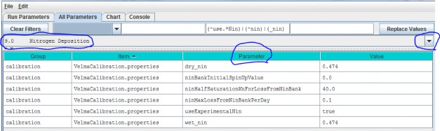
Parameter Definitions
| wet_nin |
Wet nitrogen deposition factor in gNm^2 per year |
| dry_nin |
Dry nitrogen deposition factor in gNm^2 per year |
| ninBankInitialSpinUpValue |
N-deposition initialization value. When this initialization value is zero a simulation run's first year is used to "spin up" the Michaelis-Menten-based N-deposition model.The N-deposition values computed for that first year (and subsequent values calculated from them) are unlikely to be accurate. However if a correct value is known thisinitialization parameter may be set to it. The value should be the daily average N-deposition value for a singlecell of the current simulation. If the value is unknown or cannot be reliably deduced ahead of simulation startleave this value zero and incur the first-year spin-up (see Calibration notes, below) |
| ninHalfSaturationKnForLossFromNinBank |
N-deposition Michaelis-Menten kinetics Kn constant. |
| ninMaxLossFromNinBankPerDay |
N-Deposition Michaelis-Menten kinetics maximum |
| useExperimentalNin |
When set to "true" N-deposition is computed using a banked Michaelis-Menten-based equation. When set to "false" N-deposition is computed using the VELMA version 1.0linear equation. Use of the older equation is deprecated. The default value for this parameter is "true". |
Calibration Notes
For the reasons mentioned under assumption #3, above, we recommend using the experimental (VELMA version 2.0)nitrogen deposition subroutine rather than that used in VELMA version 1.0.
We have prepared a DRAFT Excel spreadsheet that you may choose to use to parameterize the experimental nitrogen deposition subroutine.
Filename: VELMA 2.0_Nitrogen Deposition Calibrator_7-26-13 v3.xlsx Folder location: VELMAModel\Supporting Documents\Excel Calibration Files
9.1.2 Old (DEPRECATED) Nitrogen Deposition Parameters
Use of the VELMA version 1.0 nitrogen deposition subroutine is discouraged. Please see section 9.0.
10.0 - Transpiration
Evapotranspiration (ET) is the sum of evaporation and plant transpiration. ET equations and parameters in VELMAversion 2.0 are the same as for version 1.0 (see Abdelnour et al. 2011), except for the following:
- The ET recovery function has been replaced with a new subroutine that models post- disturbance changes in ETbased on leaf biomass dynamics.
- A new subroutine models age-related declines in transpiration for forest systems. See details in subsections10.1 - 10.3.1.
10.1 - Core PET and ET Parameters
Core parameters for calibrating VELMA's PET and ET submodels can be found by selecting section 10.1 from the AllParameters drop-down menu:

Parameter Definitions
(see Abdelnour et al. 2011 for equations and additional explanation):
| roair |
Air density in g/m^3 |
| be |
ET coefficient used in the logistic equation that computes ET from PET |
| temperaturePetOff |
PET is only active when air temperature is > than this value (in degrees C) |
| petParam1 |
First term of PET Hamon Equation: petParam1 * petParam2 * gS.roair * (esat / 1000.0f) |
| petParam2 |
Second term of PET Hamon Equation: petParam1 * petParam2 * gS.roair * (esat / 1000.0f) |
| notranspirationPetFraction |
The fraction of PET available outside of this a cover species/type's growing season range [0.0 - 1.0]. |
10.2 - ET Recovery On/Off ?
Select section 10.2 from the All Parameters drop-down menu to turn the ET recovery function on (true) or off(false):

10.2.1 - ET Recovery Parameters
Select section 10.2.1 from the All Parameters drop-down menu to specify ET recovery parameter values for eachcover type in your watershed (just one cover shown below):
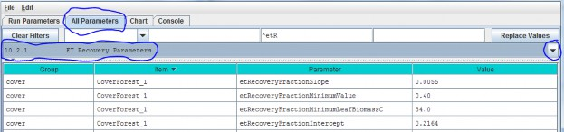
Parameter Definitions
| etRecoverFractionSlope |
The value of the ET recovery fraction's linear equation slope component. |
| etRecoverFractionMinimumValue |
ET recovery fraction is forced to this value when the current leaf biomass is less than the value specified for etRecoveryFractionLeafBiomassMinimum orwhen the calculated ET recovery fraction is less than zero. |
| etRecoverFractionMinimumLeafBiomassC |
minimum amount of leaf biomass (in gC/m^2) required to compute an ET recovery fraction. Whenever leaf biomass is less than this amount the ET recoveryfraction is forced to the etRecoverFractionMinimumValue. |
| etRecoverFractionIntercept |
value of the ET recovery fraction's linear equation intercept component. |
Calibration Notes
We have prepared a DRAFT Excel spreadsheet that you may choose to use to calibrate ET recovery parameters for your site.
Filename: VELMA 2.0_ET Recovery Calibrator_HJA_12-1-13.xlsx
Folder location: VELMA Model\Supporting Documents\Excel Calibration Files
10.3 - Transpiration Limiter On/Off?
Studies in the Pacific Northwest have shown that young forests transpire significantly more water than oldforests (McDowell et al. 2002; Moore et al. 2004). VELMA version 2.0 has a new subroutine to address age-relateddeclines in transpiration by forest vegetation.
Select section 10.3 from the All Parameters drop-down menu to turn the Transpiration Limiter subroutine on (true)or off (false):

Parameter definition:
| useTranspirationLimiter |
When set false (default value) the transpiration limiter fraction value is forced to 1.0 (Which effectively means "No age-related limitation" i.e. the limiter is OFF.)When set true the transpiration limiter fraction is computed based on its jday and coefficients settings. |
See section 10.4 for parameters and calibration information.
References
McDowell, N. G., Phillips, N., Lunch, C., Bond, B. J., & Ryan, M. G. (2002). An investigation of hydrauliclimitation and compensation in large, old Douglas-fir trees. Tree Physiology, 22(11), 763-774.
Moore, G. W., Bond, B. J., Jones, J. A., Phillips, N., & Meinzer, F. C. (2004). Structural and compositionalcontrols on transpiration in 40-and 450-year-old riparian forests in western Oregon, USA. Tree physiology,24(5), 481-491.
10.3.1 - Transpiration Parameters
Select section 10.3.1 from the All Parameters drop-down menu to specify parameter values for the TranspirationLimiter subroutine used to describe age-related declines in transpiration by forest vegetation:
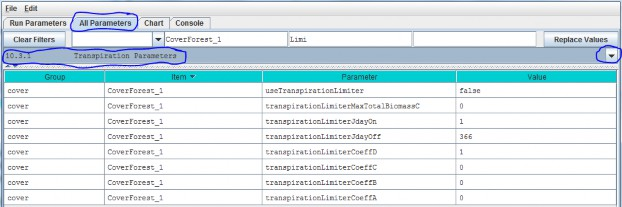
Parameter Definitions
| useTranspirationLimiter |
When set false (default value) the transpiration limiter fraction value is forced to 1.0 (Which effectively means "No limiting at all" i.e. the limiteris OFF.) When set true the transpiration limiter fraction is computed based on its jday and coefficientssettings. |
| transpirationLimiterMaxTotalBiomassC |
Upper limit of total biomass amount (in gC/m^2) for transpiration limiter fraction computation. When total biomass amount in a cell exceeds this max value thetranspiration limiter faction value is forced to the transpirationLimiterCoeffD parameter's value. |
| transpirationLimiterJdayOn |
Transpiration reduction occurs on the Julian day specified by this "on" parameter and continues on every day of the year up to and including the day specified by the paired "off" parameter. I.e. transpiration reduction occurs in the range[transpirationLimiterJdayOn transpirationLimiterJdayOff] |
| transpirationLimiterJdayOff |
Transpiration reduction occurs on the Julian day specified by this "off" parameter and does not occur for any days of the year remaining after it. I.e. transpiration reduction occurs in the range [transpirationLimiterJdayOn transpirationLimiterJdayOff] |
| transpirationLimiterCoeffA |
The A coefficient in the Transpiration Limiter Fraction equation: A / (1 + B * exp(C * totalBiomassC)) + D |
| transpirationLimiterCoeffB |
The B coefficient in the Transpiration Limiter Fraction equation: A / (1 + B * exp(C * totalBiomassC)) + D |
| transpirationLimiterCoeffC |
The C coefficient in the Transpiration Limiter Fraction equation: A / (1 + B * exp(C * totalBiomassC)) + D |
| transpirationLimiterCoeffD |
The D coefficient in the Transpiration Limiter Fraction equation: A / (1 + B * exp(C * totalBiomassC)) + D |
Calibration Notes
The transpiration limiter subroutine is experimental and we do not recommend using it at this time.
11.0 Plant Uptake
The VELMA v1.0 subroutine for plant nitrogen uptake is described by Abdelnour et al. (2011). VELMA v2.0 generallyfollows the same subroutine, but includes important changes to several components affecting nitrogen uptake:
- Uptake of NH4 and NO3 is now modeled explicitly, using pool-specific Michaelis- Mentenequations.
- The temperature response function for plant N uptake is now based on a quadratic equation described byRastetter et al. (1991).
- In VELMA v1.0 a constant root fraction parameter was applied to total plant biomass to indirectlysimulate effects of successional changes in root biomass on N uptake. VELMA v2.0 includes a leaf-stem-root (LSR)subroutine that explicitly models root biomass dynamics and consequent effects on NH4 and NO3uptake.
- Simulated total N uptake per day is allocated to leaf, stem and root tissues according to specified fractionsper tissue.
- Phenological controls on plant nitrogen uptake constrain when nitrogen uptake can occur.
- The nonlinear (Weibull) function in VELMA v1.0 for simulating the effect of forest stand age on N uptake hasbeen removed. This and other age-related effects in VELMA v2.0 are now modeled as a consequence of successionalchanges in the availabilities of nitrogen and water.
- The VELMA v2.0 plant N uptake subroutine must be set up and calibrated for each cover species/types within awatershed.
Details are provided in subsections 11.1 - 11.5.
11.1 - Plant Uptake NH4-specific
Select "11.1 Plant Uptake NH4-specific" from the All Parameters drop-down menu to specify parameter valuescontrolling NH4 uptake per cover species/type. Note that two cover types (forest and corn) are shown hereto emphasize that parameters must be specified for each cover type within a watershed (true for all of section11).
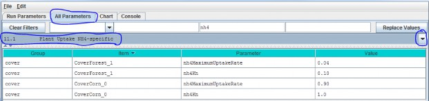
Parameter Definitions
| nh4MaximumUptakeRate |
Cover-specific maximum rate of NH4 uptake for biomass uptake equation. |
| nh4Kn |
Half saturation constant kn for Michaelis Menton NH4 uptake in gN/m^2. |
See calibration notes for section 11.2.
11.2 - Plant Uptake NO3-specific
Select "11.2 Plant Uptake NO3-specific" from the All Parameters drop-down menu to specify parameter valuescontrolling NO3 uptake per cover species/type:
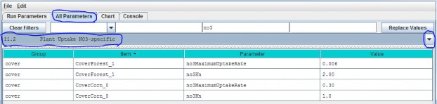
Parameter Definitions
| no3MaximumUptakeRate |
Cover-specific maximum rate of NO3 uptake for biomass uptake equation. |
| no3Kn |
Half saturation constant, kn, for Michaelis-Menten NO3 uptake in gN/m^2. |
Calibration Notes
We have prepared a DRAFT Excel spreadsheet that you may choose to use to calibrate NH4 and NO3 plant uptake parameters for your site.
Filename: VELMA 2.0_Nitrogen Uptake Calibrator (CHB Forest)_9-24-13.xlsx Folder location:VELMA2.0Software/SupportingDocuments/ExcelCalibrationFiles
11.3 - Plant Uptake GEM Temperature Component
Select "11.3 Plant Uptake GEM Temperature Component" from the All Parameters drop-down menu to specifyparameter values for the temperature response function affecting NH4 and NO3 uptake (specify percover type):
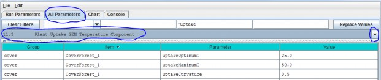
Parameter Definitions
(see Rastetter et al. (1991) for a description of the General Ecosystem Model (GEM)temperature function and parameters for simulating plant nitrogen uptake):
| uptakeOptimumT |
Optimal temperature (oC) plant uptake of NH4 and NO3 |
| uptakeMaximumTMaximum |
temperature (oC) plant uptake of NH4 and NO3 |
| uptakeCurvatureCurvature |
parameter of GEM temperature function. |
An example:

Calibration Notes
We have prepared a DRAFT Excel spreadsheet that you may choose to use to calibrate temperatureresponse functions for plant N uptake and other temperature sensitive processes in VELMA.
Filename: VELMA 2.0_Temperature & Moisture Response Functions_9-8-14.xlsx Folder location:VELMA Model\Supporting Documents\Excel Calibration Files
References
Rastetter, E. B., Ryan, M. G., Shaver, G. R., Melillo, J. M., Nadelhoffer, K. J., Hobbie, J. E., & Aber, J.D. (1991). A general biogeochemical model describing the responses of the C and N cycles in terrestrialecosystems to changes in CO2, climate, and N deposition. Tree Physiology, 9(1-2), 101-126.
11.4 - Plant Uptake NPP Distribution Fractions
Select "11.4 Plant Uptake NPP Distribution Fractions" from the All Parameters drop-down menu to specify parametervalues controlling how daily total N uptake (a.k.a, "NPP" in VELMA) is allocated to leaf, aboveground stem,belowground stem, and root biomass:

Parameter Definitions
| nppToBiomassRootNfraction |
The fraction (0.0 -1.0) of total plant uptake of nitrogen (NH4 + NO3) per day allocated to the root biomass N pool. |
| nppToBiomassLeafNfraction |
The fraction (0.0 -1.0) of total plant uptake of nitrogen (NH4 + NO3) per day allocated to the leaf biomass N pool. |
| nppToBiomassAgStemNfraction |
The fraction (0.0 -1.0) of total plant uptake of nitrogen (NH4 + NO3) per day allocated to the AgStem biomass N pool. |
Note that "nppToBiomassBgStemfraction" does not need to be specified because VELMA internally calculates it bydifference.
Calibration Notes
Figure 1 and Appendix 1 provides conceptual diagrams and equations describing how N uptake (NPP) is allocated among the four LSR plant tissues.
To calibrate the N allocation parameters described in this section, we recommend constructing an annual plantbiomass N budget(s) for all four LSR tissues per cover type. Observed data and estimates can usually be found inthe literature for this. For example:
- Leaf litterfall data can be used to estimate annual leaf NPP, usually as dry weight or carbon, so you will alsoneed C/N data to calculate annual N uptake.
- Data for above- and belowground stem biomass growth can be obtained from tree- ring data and allometric biomassequations for forest cover types, or from "destructive" biomass harvest methods in grasslands or agriculturalplots.
- Production estimates for fine roots exist for many cover types, and are based on a variety of methods - e.g.,see Nadelhoffer, K. J., & Raich, J. W. (1992).
Please contact if you have questions.
References
Nadelhoffer, K. J., & Raich, J. W. (1992). Fine root production estimates and belowground carbon allocationin forest ecosystems. Ecology, 1139-1147
11.5 - Plant Uptake Phenology
Select "11.5 Plant Uptake Phenology" from the All Parameters drop-down menu to specify parameter values affectingwhen plant N uptake begins and ends during the year (per cover type):
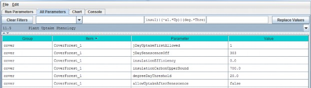
Parameter Definitions
| jDayUptakeFirstAllowed |
The first Julian day of the year on which uptake is possible for this Cover. Uptake will NEVER happen before the specified day. Use this parameter to delay uptake until the dailyphotoperiod is sufficient for the given Cover. This parameter specifies the first day of the year when uptakecan occur not necessarily the first day when uptake will occur. On and after the day specified by this parameteruptake will occur whenever the degree day parameterization allows it to begin. |
| jDaySenescenceOff |
The Julian Day of the year when this cover species biomass stops senescing (Note: any value >= 367 results in biomass NOT senescing through the end of theyear.nppToBiomassAgStemNfraction The fraction (0.0 -1.0) of total plant uptake of nitrogen(NH4 + NO3) per day allocated to the AgStem biomass N pool. |
| insulationEfficiency |
Insulating efficiency of available litter range [0.0 1.0] (this affects soil temperature and, therefore, plant N uptake). NOTE: Set this value to zero to disable insulationeffects on degree- day calculation. |
| insulationCarbonUpperBound |
Quantity of above-ground litter beyond which there is no additional insulating effect in gC/m^2 (this affects soil temperature and, therefore, plant N uptake). |
| degreeDayThreshold |
Allow biomass uptake only when accumulated degree day value >= degreeDayThreshold. |
| allowUptakeAfterSenescence |
When set true (default) uptake takes place before jDaySenescenceOn and resumes after jDaySenescenceOff. When set "false" uptake occurs ONLY beforejDaySenescenceOn |
12.0 Plant Mortality
VELMA v.2.0 has a new plant biomass mortality function, replacing the linear mortality function in v1.0(Abdelnour et al. 2011). The new mortality function was initially developed for forest vegetation but we havefound that it applies just as well to other cover types, including nonwoody species such as grasslands andagricultural crops.
The mortality function is based on the following observations and assumptions:
- The ratio of mortality/NPP during succession is nonlinear. For example, in regrowing forest stands, observedincreases in stem biomass require that stem NPP exceeds stem mortality until steady state is reached.
- A logistic function provides sufficient flexibility to capture temporal changes in the relationship betweenmortality and NPP during succession. Specifically, a logistic function is used to describe nonlinear changes ina tissue's litterfall/NPP ratio vs. stand age, where "tissue" can represent leaf, aboveground stem, belowgroundstem, or root biomass. In practice, total plant biomass (or aboveground stem biomass) serves as a proxy forstand age.
- For example, using VELMA's parameter naming convention, mortalityAgStemCarbon / nppAgStemCarbon = C / (1 + A * exp^(-B * plantBiomassCarbon))
- Rearranging, mortalityAgStemCarbon = nppAgStemCarbon * C / (1 + A * exp^(-B * plantBiomassCarbon))
For example, the figures below show results obtained by applying the logistic mortality function to a riparianhardwood forest. The left figure shows changes in the ratio of belowground stem mortality/NPP vs. total stembiomass (proxy for stand age). The right figure shows simulated temporal changes in simulated belowground stembiomass and total plant biomass. Adjustment of the mortality function parameters can be used to flatten orsteepen the asymptotic trends in biomass, according to chronosequence data. The mortality function must beapplied to all four of VELMA's plant tissues (results for leaf, aboveground stem and fine root biomass are notshown here).
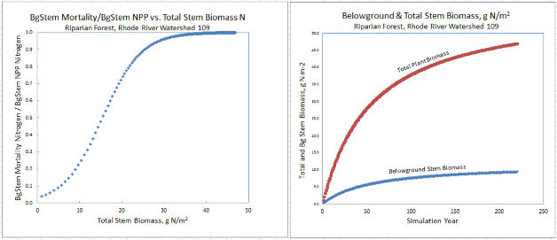
12.1 - Plant Mortality Logistic or Linear?
Select "12.1 Plant Mortality Logistic or Linear ?" from the All Parameters drop-down menu to specify whether youwish to use the logistic (recommended) or linear functions for simulating plant biomass mortality:
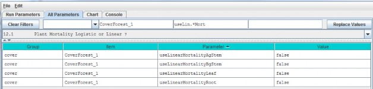
///// IMPORTANT NOTE /////
We do not recommend using the old linear model for simulating plant biomass mortality. Therefore, makesure all four of the parameters shown above are set = false. When that is the case, plant biomass mortality iscomputed using the logistic function. You will need to do this for all cover types included in your watershed.
12.1.1 - Plant Mortality Logistic Parameters
Select "12.1.1 Plant Mortality Logistic Parameters" from the All Parameters drop-down menu to specify parametervalues affecting biomass mortality for each of VELMA's four plant tissue types. Parameter specifications arerequired for each cover type.

Parameter Definitions
| mortalityAgStemAnnualFraction |
The fraction of a tissue's simulated annual mortality that gets subtracted from the corresponding biomass pool per day during the specified period ofsenescence. The default value for this fraction is 1.0 (i.e. the full per-day amount) and the valid range is[0.0 to 1.0] Warning! Users unfamiliar with this parameter's behavior should leave it set to the defaultvalue of 1.0. |
| mortalityAgStemDenominatorCoefficient |
"A" in the equation above. |
| mortalityAgStemExponentialCoefficient |
"B" in the equation above.above. |
| mortalityAgStemNumeratorCoefficient |
"C" in the equation above. |
Note: the 4 preceding parameters repeat for the other tissues - i.e., "Leaf", "BgStem" or "Root" appear in placeof "AgStem" in the parameter names above. These
Calibration Notes
We have prepared a DRAFT Excel spreadsheet that you may choose to use to calibrate plant logistic mortality parameters for your site.
Filename: VELMA 2.0_Biomass Mortality Calibrator_CHB_9-24-13 v3.xlsx Folder location:VELMA2.0Software/SupportingDocuments/ExcelCalibrationFiles
12.1.1.1 through 12.1.1.4 - Plant Mortality Logistic Parameters for Leaf, AgStem, BgStem and Root Biomass
See section 12.1, above, for mortality parameter definitions and calibration information. Although 12.1 completelist However, to avoid mistakes, we recommend that you use sections
12.1.1.1 through 12.1.1.4 in the All Parameters drop-down menu to specify tissue-specific mortalityparameters. For example, use the All Parameters drop-down menu to select section
12.1.1.1 to display and specify leaf logistic mortality parameters. Parameters for aboveground stem, belowgroundstem and roots appear under the following 3 subsections.
12.2 - Plant Mortality Phenology
Select "12.2 Plant Mortality Phenology" from the All Parameters drop-down menu to specify parameter values forthe beginning and end dates for plant biomass mortality.
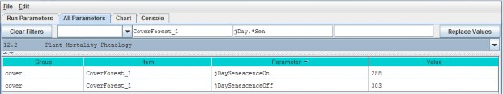
Parameter Definitions
| jDaySenescenceOn |
The Julian Day of the year when this cover species biomass begins senescing. (Note: Set >= 367 to "deactivate" senescence for this cover species.) |
| jDaySenescenceOff |
The Julian Day of the year when this cover species biomass stops senescing (Note: any value >= 367 results in biomass NOT senescing through the end of the year. |
13.0 Decomposition
Decomposition of soil organic matter is a key process in VELMA, controlling the rate at which dead organicC and N pools (detritus and humus) are converted to inorganic C and N pools (CO2, NH4, NO3,DON and DOC).
VELMA v2.0 has a new decomposition model based on Potter et al. (1993). In the Potter model,microbially-mediated decomposition of plant and soil organic residues produces CO2, such that
- i = a specified soil organic matter pool (in VELMA, plant tissue detritus or humus)
- CO2i = carbon dioxide released by the decomposition of pool i
- Ci = carbon content (gC/m2) of pool i
- ki = maximum decay rate constant of pool i
- Ws = scalar constant (0-2.8) for the effect of soil moisture content on decomposition
- Ts = scalar constant (0-1) for the effect of temperature on decomposition
- Me = carbon assimilation efficiency (0 - 1) of microbes We made several modifications to the Potter model forVELMA v2.0:
- We modified the Potter decomposition equation, above, to apply it to detritus and humus N pools ratherthan C pools. The difference in the C/N ratios of donor and recipient pools are used to estimate total carbondecomposed. Specified fractions of the total carbon decomposed are converted to CO2 and DOC.Similarly, a specified fraction of total decomposed N is converted to DON.
- We replaced Potter's scalar constant for soil temperature (Ts) with a nonlinear function describing thefraction (0 - 1) of the maximum decay rate (Ki) versus soil temperature (oC, perlayer). See section 11.3 for a description of this nonlinear temperature function, which is also used in theplant N uptake subroutine.
- We replaced Potter's scalar constant for soil moisture (Ws) with a nonlinear function describingthe fraction (0 - 1) of the maximum decay rate (Ki) versus layer-specific soil moisture (v/v, per layer).Our soil moisture decomposition function uses a nonlinear Weibull function, which is the same as that applied tothe soil moisture N fixation function (see section 14.0).
"Appendix 1: Overview of VELMA's Leaf-Stem-Root (LSR) PlantBiomass Submodel" presents a conceptual diagram and equations describing pools and fluxes involved in thedecomposition subroutine for VELMA v2.0.
13.1 - Decomposition Nitrogen-To-DON Fraction
Select "13.1 Decomposition Nitrogen-To-DON fraction Plant Mortality Phenology" from the All Parameters drop-downmenu to specify a parameter value for controlling DON production:
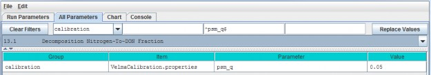
Parameter Definitions
| psm_q |
The fraction of decomposed nitrogen converted to DON range [0.0 - 1.0] |
Calibration Notes
You will need to iteratively calibrate "psm_q" against observed stream DON concentrations (Abdelnour et al.2013). This is most easily accomplished using VELMA's runtime visualization option for "Calibration AnnualNutrients". After annual results are in the ballpark, switch to "Calibration Daily Nutrients".
Reference:
Potter, C. S., Randerson, J. T., Field, C. B., Matson, P. A., Vitousek, P. M., Mooney, H. A., & Klooster, S.A. (1993). Terrestrial ecosystem production: a process model based on global satellite and surface data. GlobalBiogeochemical Cycles, 7(4), 811-841.
13.2 - Decomposition CO2 Respiration Fraction
Select "13.2 Decomposition CO2 Respiration Fraction" from the All Parameters drop-down menu to specify aparameter value controlling CO2 production during decomposition:

Parameter Definitions
| co2RespriationFraction |
The fraction of humus decomposition (in Carbon) lost to the atmosphere as CO2. |
Calibration Notes
You will need to iteratively calibrate "co2RespriationFraction" in order to obtain a good fit betweensimulated and observed stream DOC concentrations, since DOC produced during decomposition = 1 -co2RespriationFraction. This is most easily accomplished using VELMA's runtime visualization option for"Calibration Annual Nutrients". After annual results are in the ballpark, switch to "Calibration DailyNutrients".
13.3 - Decomposition Microbe Efficiency
Select "13.3 Decomposition Microbe Efficiency" from the All Parameters drop-down menu to specify the microbialefficiency for carbon assimilation during decomposition:

Parameter Definitions
| microbeCefficiency |
The carbon assimilation efficiency (0 - 1) of microbes. This is a globally-applicable term of the Potter equation. |
As an example, an assimilation efficiency = 0.45 means that for every gram of carbon decomposed, 0.45 g isassimilated into the humus carbon pool (microbes are not explicitly modeled), and the remaining 0.55 g isrespired as CO2. However, a small fraction (1 - co2RespriationFraction) of this 0.55 g goes to the DOCpool.
Consult the references below for insight into typical values for microbeCefficiency.
References:
Potter, C. S., Randerson, J. T., Field, C. B., Matson, P. A., Vitousek, P. M., Mooney, H. A., & Klooster, S.A. (1993). Terrestrial ecosystem production: a process model based on global satellite and surface data. GlobalBiogeochemical Cycles, 7(4), 811-841.
Herron, P. M., Stark, J. M., Holt, C., Hooker, T., & Cardon, Z. G. (2009). Microbial growth efficienciesacross a soil moisture gradient assessed using 13C-acetic acid vapor and 15N- ammonia gas. SoilBiology and Biochemistry, 41(6), 1262-1269.
13.4 - Decomposition Cover-Specific Parameters
Select "13.4 Decomposition Cover-Specific Parameters" from the All Parameters drop-down menu to specify themicrobial efficiency for carbon assimilation during decomposition. These parameters must be specified for eachcover type.

Parameter Definitions
| humusNmaxDecay |
The maximum rate of decay (0 - 1) for the humus N pool. |
| detritusBgStemNmaxDecay |
The maximum rate of decay (0 - 1) for the belowground stem (BgStem) N pool. |
| detritusRootNmaxDecay |
The maximum rate of decay (0 - 1) for the root N pool. |
| detritusLeafNmaxDecay |
The maximum rate of decay (0 - 1) for the leaf N pool. |
| detritusAgStemNmaxDecay |
The maximum rate of decay (0 - 1) for the aboveground stem (AgStem) N pool. |
Calibration Notes
You will need to iteratively calibrate these decay constants, for each cover type, in order to obtain a good fitbetween simulated and observed detritus pool data. It is almost always best to calibrate for steady state(equilibrium) conditions, e.g., for mature cover types.
14.0 Nitrogen-Fixation
Nitrogen fixation is a process in which nitrogen (N2) in the atmosphere is converted
into ammonium (NH4). In biologicalsystems, N fixation can be carried out by free-living (asymbiotic) microorganisms, or by plant species that havea symbiotic relationship with N- fixing bacteria (Frankia and Rhizobia). Insymbiotic N fixation, plants provide carbohydrates as an energy source to bacteria that in turn supplyNH4 to the host plant.
Rates of symbiotic N fixation for soybeans, red alder and other species can sometimes exceed 100 kg ha-1yr-1, an amount similar to agricultural fertilizer applications. Rates for asymbiotic N fixers tend to bemuch lower - for example, <1 kg ha-1 yr-1in some PNW coniferous forests.
However, it is important to capture even small N additions, which are important for maintaining and evenincreasing ecosystem N stocks over successional time scales.
We added a nitrogen fixation subroutine to VELMA v2.0 that addresses symbiotic and asymbiotic fixation for anycover type (agricultural, grassland, forest, etc.)
The conceptual diagram below shows VELMA's modeled pools and fluxes. Note that parameter names in this diagram donot strictly follow those used in VELMA, but nonetheless convey the overall structure of the N fixationsubroutine.
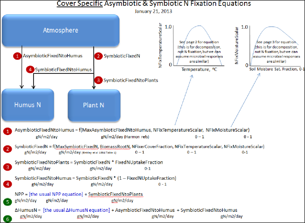
Select "14.0 Nitrogen-Fixation" from the All Parameters drop-down menu to specify parameter values for asymbioticand symbiotic N fixation.

Parameter Definitions
| useNitrogenFixation |
When using NitrogenFixation = false (default), no nitrogen fixation is computed for thiscells of this cover. When useNitrogenFixation = true, nitrogen fixation is computed using this cover's other nitrogen fixation parameters. |
| nitrogenFixerFraction |
The fraction of a cell's plant matter (in the range [0.0 1.0]) that performs Nitrogenfixation. |
| nitrogenFixationUptakeFraction |
The fraction (in the range [0.0 1.0]) of the symbiotic fixed Nitrogen that is available for plant NPP. Plant symbiotic fixed nitrogen is: Total symbiotic fixed Nitrogen* nitrogenFixationUptakeFraction The remainder of the total is allocated as Humus symbiotic fixed nitrogen. |
| nitrogenFixationTemperatureScalarOptimumT |
Optimum temperature (in degrees C) parameter of GEM temperature scalar function for Nitrogen fixation. |
| nitrogenFixationTemperatureScalarMaximumT |
Maximum temperature (in degrees C) parameter of GEM temperature scalar function for Nitrogen fixation. |
| nitrogenFixationTemperatureScalarCurvature |
Curvature parameter ("qx") of GEM temperature scalar function for Nitrogen fixation |
| nitrogenFixationSymbioticMaximum |
The maximum amount of Nitrogen converted from the atmosphere by symbiotic processes in gNfixed/gFixerFineRootBiomassN per m2 per day. |
| nitrogenFixationMoistureScalarLambda |
The Lambda value of the Weibull equation used to compute a water scalar for Nitrogen fixation. |
| nitrogenFixationMoistureScalarK |
K value of the Weibull equation used to compute a water scalar for Nitrogen fixation. |
| nitrogenFixationAsymbioticMaximum |
The maximum amount of Nitrogen converted from the atmosphere by asymbiotic processes in gN/m2/day. |
Calibration Notes
For initial calibration of the N fixation subroutine's temperature and moisture functions, we recommend startingwith the values shown in the screenshot above. The cover-specific parameters will require iterative calibrationagainst published data.
14.1 - Nitrogen-Fixation On/Off ?
See section 14.0, above, to specify whether to turn the N fixation subroutine on (true) or off (false). We'veplaced the on/off parameter there.
15.0 Nitrification
Nitrification is the microbially-mediated conversion of ammonium (NH4+) to nitrate(NO3-). As the diagram below indicates, nitrification (red box) is an important step in the soilnitrogen cycle (partially shown here).
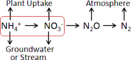
Compared to the positively charged NH4+ ion, the negatively charged NO3- ion ishighly mobile in soil (also negatively charged) and more readily leached to groundwater and streams.
Nitrification also affects rates of nitrogen uptake by plant species that differ in their affinities forNH4+ and NO3- (McKane et al. 2002). Nitrification is also a preliminary stepfor the process of denitrification, in which NO3- is microbially transformed to nitrous oxide(N2O), a potent greenhouse gas, and nitrogen gas.
The default (recommended) version of the nitrification subroutine in VELMA v2.0 is based on Parton et al. 2001, with recent modifications made by Dr. Stephen Del Grosso (steve.delgrosso@ars.usda.gov) and coworkers. Dr. Del Grosso's modifications are described in his NGAS spreadsheet model.
15.1 - Nitrification On/Off
Select "15.1 Nitrification On/Off ?" from the All Parameters drop-down menu to specify whether to turn theNitrification subroutine on (true) or off (false).

Parameter Definitions
| useNitrogenFixation |
When set false daily nitrification amounts are ignored and the PSM model behaves as if the nitrification amount is zero When set true (default) nitrification occursnormally |
15.1.1 - Nitrification Function Type
Select "15.1.1 Nitrification Function Type" from the All Parameters drop-down menu to specify the
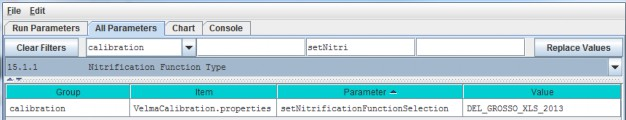
Parameter Definitions
| setNitrogenFunctionSelection |
Specify "PARTON_1996" "PARTON_2001" or "DEL_GROSSO_XLS_2013" as the value of the setNitrificationFunctionSelection property. Warning: be sure to use UPPERCASE text! The simulator engine will compute nitrifcation amounts using the specified function.PARTON_1996 = Function based upon equation given in Figure 2 (d) in [Parton et al. 1996] from Global BiochemicalCycles v.10. PARTON_2001 = Function based upon equation (2) in [Parton et al. 2001] from Journal of GeophysicalResearch v.106. DEL_GROSSO_XLS_2013 = (Default / RECOMMENDED) function implementing the Excel 2013 spreadsheet model provided byDr. Stephen Del Grosso. |
15.1.2 - Nitrification Soil-Specific Parameters
Select "15.1.2 Nitrification Function Type" from the All Parameters drop-down menu to specify nitrificationsubroutine parameters. The parameters shown below must be specified for each soil type in your watershed (justone soil type shown in the screenshot below).
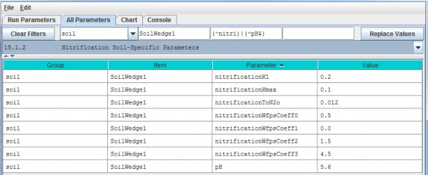
Parameter Definitions
| nitrificationK1 |
Fraction of net Nitrogen mineralized that is nitrified per day range in [0.0 1.0]. [Parton et al.2001]. |
| nitrificationKmax |
Maximum fraction of NH4 nitrified per day in units of gN/m2/day range in [0.0 1.0]. [Parton etal. 2001] |
| nitrificationToN2o |
N2O flux associated with nitrification in units of gN/m2/day |
| nitrificationWfpsCoeff0 |
Soil-specific coefficient for Water Filled Pore Space (WFPS) effect on nitrification equation. |
| nitrificationWfpsCoeff1 |
Soil-specific coefficient for Water Filled Pore Space (WFPS) effect on nitrification equation. |
| nitrificationWfpsCoeff2 |
Soil-specific coefficient for Water Filled Pore Space (WFPS) effect on nitrification equation. |
| nitrificationWfpsCoeff3 |
Soil-specific coefficient for Water Filled Pore Space (WFPS) effect on nitrification equation. |
| pH |
This soil's pH value. |
Calibration Notes
The nitrification model has been extensively applied to agricultural systems by the NGAS model developers (Partonet al. 2001; Del Grosso et al. 2001 and 2006). We recommend starting with the default parameter values providedby Stephen Del Grosso in his NGAS spreadsheet model.
Default Parameter Values:
nitrificationK1 = 0.20 (Parton et al. 2001; Del Grosso NGAS spreadsheet model)
nitrificationKmax = 0.1 (Parton etal. 2001; Del Grosso NGAS spreadsheet model)
nitrificationToN2o = 0.02 (Parton et al. 2001; Del Grosso NGASspreadsheet model = 0.012)
Soil Texture Table
| Nitrification Parameter |
Coarse |
Fine |
Volcanic ash |
| nitrificationWfpsCoeff0 |
0.5 |
0.65 |
0.75 |
| nitrificationWfpsCoeff1 |
0 |
0 |
0 |
| nitrificationWfpsCoeff2 |
1.5 |
1.2 |
1.2 |
| nitrificationWfpsCoeff3 |
4.5 |
2.5 |
2.5 |
References for Sections 15.0 - 15.1.2
Del Grosso, S. J., Parton, W. J., Mosier, A. R., Ojima, D. S., Kulmala, A. E., & Phongpan, S. (2000). Generalmodel for N2O and N2 gas emissions from soils due to dentrification. Global Biogeochemical Cycles, 14(4),1045-1060.
Del Grosso, S. J., Parton, W. J., Mosier, A. R., Walsh, M. K., Ojima, D. S., & Thornton, P. E. (2006).DAYCENT national-scale simulations of nitrous oxide emissions from cropped soils in the United States. Journalof environmental quality, 35(4), 1451-1460.
McKane, R. B., Johnson, L. C., Shaver, G. R., Nadelhoffer, K. J., Rastetter, E. B., Fry, B., ... & Murray, G.(2002). Resource-based niches provide a basis for plant species diversity and dominance in arctic tundra.Nature, 415(6867), 68-71.
Parton, W. J., Holland, E. A., Del Grosso, S. J., Hartman, M. D., Martin, R. E., Mosier, A. R., ... &Schimel, D. S. (2001). Generalized model for NO x and N2O emissions from soils. Journal of Geophysical Research:Atmospheres (1984-2012), 106(D15), 17403-17419.
16.0 Denitrification
Denitrification is the microbially-mediated conversion of nitrate (NO3-) to nitrous oxide(N2O) and nitrogen gas (N2). This process is represented in the red-outlined area in the diagrambelow.
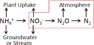
Nitrate that is not denitrified or taken up by plants can be readily transported to ground and surfacewaters (the high mobility of NO3- in soil is because both are negatively charged). Thus,
denitrification can be important for protecting water quality. On the other hand, if denitrification does not goto completion (stops at N2O instead of N2) it can increase atmospheric inputs of N2O, a potentgreenhouse gas.
The denitrification subroutine in VELMA v1.0 and v2.0 is based on Del Grosso et al. 2001. However, VELMA v2.0 includes recent updates to equations and correction to parameter values described in Dr. Stephen Del Grosso's (steve.delgrosso@ars.usda.gov) NGAS spreadsheet model.
16.1 - Denitrification On/Off?
Select "16.1 Denitrification On/Off ?" from the All Parameters drop-down menu to specify whether to turn thedenitrification subroutine on (true) or off (false).
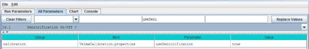
Parameter Definitions
| setNitrogenFunctionSelection |
When set "false" daily denitrification amounts are ignored and VELMA's biogeochemistry submodel behaves as if the denitrification amount is zero. When set "true"(default) denitrification occurs normally. |
16.1.1 - Denitrification Core Parameters
Select "16.1.1 Denitrification Core Parameters" from the All Parameters drop-down menu to specify denitrificationsubroutine parameter values. These global parameters are applicable to all soil types.
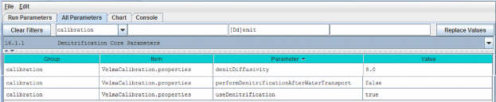
Parameter Definitions
| denitDiffusivity |
This is the value of the "a" parameter in Del >Grosso etal. (2000) fig.7(a). It controls the >shape of the logistic function that defines the>response of "relative denitrification" (0.0 - >1.0) to water filled pore space (WFPS%). See calibration notes at the end of section >16.0, below. |
| performDenitrificationAfterWaterTransport |
When set "true" daily denitrification amounts are calculated AFTER vertical and lateral transportation of chemicals by water occurs. When set "false"(default) daily denitrification occurs BEFORE water transport. |
| useDenitrification |
When set "false" daily denitrification amounts are ignored and the PSM model behaves as if thedenitrification amount is zero. When set "true" (default) denitrification occurs normally |
16.1.2 - Denitrification Soil-Specific Parameters
Select "16.1.2 Denitrification Soil-Specific Parameters" from the All Parameters drop-down menu to specify thefollowing set of denitrification parameters for each soil type in your watershed. There is just one parameterper soil type (3 soil types are shown in the screenshot below).
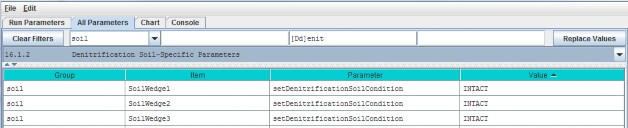
Parameter Definitions
| setDenitrificationSoilCondition |
Defines soil condition with respect to denitrification calculations. Value must be one of the following: "INTACT" (the default value) or"REPACKED_COARSE" or "REPACKED_MEDIUM" or "REPACKED_FINE" The value is case-sensitive and must appear exactly as given here (but with the surrounding double-quotes). Inpractice, Del Grosso's NGAS spreadsheet uses "INTACT" = undisturbed soils, and "REPACKED_MEDIUM" and"REPACKED_FINE" = medium or fine textured soil samples, respectively, that have been repacked in thelab after field collection. |
Calibration Notes:
The denitrification subroutine has been extensively applied to agricultural systems by the NGAS model developers(Parton et al. 2001; Del Grosso et al. 2000 and 2006). The parameter values used in the model seem to be fairlyrobust across the wide range of conditions reported by the authors. When calibrating the denitrificationsubroutine for a new site, we recommend that you initially focus on just two parameters (assuming all thetrue/false options are set up correctly).
These are the yellow-highlighted parameters above: denitDiffusivity and setDenitrificationSoilCondition.
The denitDiffusivity parameter controls the shape of the logistic function that defines the response of"relative denitrification" (0.0 - 1.0) to water filled pore space (WFPS %). Figure 7 in Del Grosso et al. (2000)illustrates this:

Thus, you will need to adjust the denitDiffusivity parameter ("a" in Figure 7) to obtain a response forthe soil texture that is most appropriate for your watershed. You will also need to specify "INTACT" forundisturbed soils. "REPACKED_MEDIUM" or "REPACKED_FINE" refers to soil columns that have been reconstructed inthe laboratory (Del Grosso et al. 2000). You will need to decide if the REPACKED choices are appropriate forcompacted field soils, e.g., under high tillage practices.
References for section 16.0 (all subsections sections)
Del Grosso, S. J., Parton, W. J., Mosier, A. R., Ojima, D. S., Kulmala, A. E., & Phongpan, S. (2000). Generalmodel for N2O and N2 gas emissions from soils due to dentrification. Global Biogeochemical Cycles, 14(4),1045-1060.
Del Grosso, S. J., Parton, W. J., Mosier, A. R., Walsh, M. K., Ojima, D. S., & Thornton, P. E. (2006).DAYCENT national-scale simulations of nitrous oxide emissions from cropped soils in the United States. Journalof environmental quality, 35(4), 1451-1460.
Parton, W. J., Holland, E. A., Del Grosso, S. J., Hartman, M. D., Martin, R. E., Mosier, A. R., ... &Schimel, D. S. (2001). Generalized model for NO x and N2O emissions from soils. Journal of Geophysical Research:Atmospheres (1984-2012), 106(D15), 17403-17419.
17.0 - Simulation Run Schedule
To let VELMA know when to start and stop a simulation, you specify need to specify values for the followingparameters:
| forcing_start |
First year of driver (forcing) data available for the simulation model run |
| forcing_end |
Last year of driver (forcing) data available for the simulation model run |
| syear |
Starting year of simulation model run |
| eyear |
Ending year of simulation model run |
| numberOfLoops |
The number of times (loops) to repeat a simulation (syear |
to eyear will repeat for the specified number of loops)
The Forcing Start and End Years Specify When a Simulation CAN Run
The VELMA Simulator expects every driver and observed data file specified in the simulation configuration to have1 line of data for each day between the first day of the year specified for the forcing_start parameterand the last day of the year specified for the forcing_end parameter.
For example, if forcing_start = 2000 and forcing_end = 2001, each driver or observed data file musthave 366 + 365 lines of data (one for each of the 731 days of years 2000 through 2001).
The value specified by forcing_start must be less than or equal to the value of forcing_end.
The Simulation Start and End Years Specify When a Simulation WILL Run
The years that the VELMA Simulator actually runs a simulation for are specified by the syear (start year)and eyear (end year) simulation configuration parameters. It is an error for syear's value to begreater than eyear's, and for either value to lie outside the bounds of the years specified byforcing_start and forcing_end, however syear and eyear may specify a sub-rangewithin that range.
For example, if [forcing_start, forcing_end] = [1995, 2010], [syear, eyear] may be [1997, 2010], oreven a single year, like [1998, 1998].
The Loops Parameter Specifies How Many Times the Simulation Repeats a Run
The numberOfLoops parameter defaults to "1", which tells the VELMA Simulator to run the specifiedsimulation from start year to end year once, and then stop. Setting the numberOfLoops parameter ton, (with > 1) tells the VELMA simulator to run the simulation from start year to end year n times in arow, but to only initialize the simulation before the first start-to-end run. In this way, the numberOfLoopsparameter provides a (simplistic) spin-up mechanism. The second start- to-end run after the first willbegin with the simulation's data state where it was at the end of the first start-to-end run, and so on.
Use the All Parameters Outline Selector to Focus on the Simulation Run Schedule Parameters
can filter the AllParameters tab's parameters table to focus on the simulation run schedule by selecting item "17.0 Simulation RunSchedule" in the outline dropdown selector: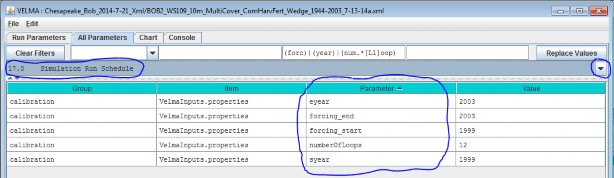
You Can Also Review and Set Some of these Values in the Run Parameters Tab
Compare circled fields in the Run Parameters tab below with the parameters circled in the All Parameters tableabove. Setting the "Run Simulator From" and "To" fields in the Run Parameters tab sets the values of the syearand eyear parameters. Setting the Run Parameters "Number of Loops" value sets the value of the numberOfLoopsparameter. Note however, that you can only set the forcing_start and forcing_end values in the All Parameterstable. These values are read-only fields in the Run Parameters tab. The screenshot above happens to specify 12loops - i.e. run the simulation [1999, 2003] x12 - that's a significant spin up. Generally speaking, find outhow long one simulation loop takes to run before embarking on that many multiple loops.

18.0 - Years to Compute Nash-Sutcliffe for Runoff
The VELMA Simulator Calculates a Nash-Sutcliffe Value for Runoff
Whenever possible, the VELMA simulator automatically computes a Nash-Sutcliffe Coefficient for observed vs.simulated annual runoff values. In order to calculate the runoff Nash-Sutcliffe, the simulator must know whichspan of years to include in the calculation, and have observed runoff data for those years available.
To ensure that the VELMA simulator is able to compute a meaningful Nash-Sutcliffe value for your simulation run,provide values for the following configuration parameters.
Set the Observed Runoff Source File
Click the All Parameters tab's configuration outline dropdown selector and select item "19.0 Observed DataFiles". The All Parameters table should then look like this:
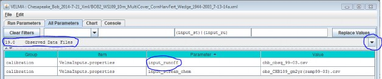
Set the input_runoff parameter to the name of a .csv file containing valid observed runoff data. A validfile has a single column of floating-point data, one day's observed runoff value per row. There must be exactlyas many rows in the file as there are days in the simulation configuration's
forcing_start to forcing_end parameter's span of years. (E.g. if forcing_start = 2000 and
forcing_end = 2001, then there must be 366 + 365 or 731 rows of data in the file.) The specified file's locationis assumed to be the directory specified by the inputDataLocationRootName +inputDatalocationDirName.
Set the Years to Simulation the Nash-Sutcliffe
Click the All Parameters outline dropdown selector again, and this time select item "18.0 Years to ComputeNash-Sutcliffe for Runoff". The All Parameters table should then look like this:

The nashSutcliffeStartYearForRunoffStats and nashSutcliffeEndYearForRunoffStats specify the firstand last years of the simulation run that are used to compute the Nash-Sutcliffe coefficient. Obviously, thesestart and end year values must be within the range of the simulation run's start and end years as a whole. Forexample, if your simulation runs from 1995 to 2005, you cannot specify years 1980 to 2009 as the span forcomputing the Nash-Sutcliffe.
The VELMA Simulator Writes the Nash-Sutcliffe Coefficient for Runoff to an Output File
The VELMA simulator writes the Nash-Sutcliffe coefficient for runoff to a file named"NashSutcliffeCoefficients.txt". This is a simple text file, created in the directory specified by thesimulation configuration's intializeOutputDataLocationRoot parameter.
The file contains a single line, reporting the Nash-Sutcliffe result like this:
Nash-Sutcliffe Coefficient=0.8045351825866978 Loop=1 Years=[1969 to 2008]
The Computed Nash-Sutcliffe Value is Only as Accurate as the Observed Data
The auto-computation of the Nash-Sutcliffe coefficient for runoff is convenient, but it is only as accurate asthe observed data and year's span allow it to be.
19.0 - Observed Data Files
If you want VELMA to graphically display observed stream chemistry and runoff data along with simulated valuesduring a simulation (section 25.0), and calculate the Nash-Sutcliffe efficiency coefficient (section 18.0), youwill need to prepare input files and specify their names in the All Parameters outline drop-down menu forsection "19.0 Observed Data Files":

For the input_runoff parameter, specify the name of a file (.csv format) containing daily observedstreamflow (runoff) values in mm/day. The data must be formatted as one value per line in the file, and the filemust have as many lines as there are days between the simulator
configuration's specified forcing_start and forcing_end parameter values (see "All Parameters 17.0- Simulation Run Schedule")
For the input_chem parameter, specify the name of a file (.csv format) containing observed dailystream chemistry values for DON, NH4, DOC and NO3, in that order! Units are g Nm-2 day-1, or g C m-2 day-1.
Both input files must be placed in the simulation configuration's input file directory location(inputDataLocationDirName) and name (inputDataLocationRootName). These input data parameters canbe found by selecting "Startups" under the drop-down Filter menu tab (type "input" in the filter for the"Parameter" column if you wish to focus the selection on just these two parameters:
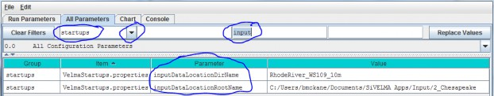
20.0 - Simulation-End Data Capture for Spin-up Initialization Use
Skip to section 21.0 where the procedure for section 20.0 is included as part of the "Simulation- StartInitialization from Spin-up Data" procedure.
This section outlines a technique for using the ending state of a VELMA simulator run's spatial data pool valuesas the initial starting state for the spatial data pools of a second simulation run.
- Create a common simulation configuration base .xml document: The base .xml simulation configuration is your overall simulation configuration, with DEM, soil, cover, etc.parameters set as you wish them to be for site and conditions you are simulating.
- Make two copies of the base simulation configuration .xml document: One of the two copies will be modified to be the spin up configuration. The other will be the actual, finalconfiguration.
- Modify the Spin up configuration to save spatial data state at the end of its simulation run
- Load the Spin up configuration into JVelma.
- Click to the "All Parameters" tab and select "All startups" from the drop-down list of filters. That is, usethe drop-down button located abovethe "Group" column, not the "Value" column. You may need to click 'Clear Filters' button first to get rid of any filtering text already present).
- In the All Parameter "ID Key" column, locate the setEndStateSpatialDataLocationName parameter, then click-click into its "Value" field and type in the name of a directory where the simulation can store spatial data map (".asc") files. Note that:
Note that:
- The directory name may be either a fully-qualified path, or a relative path. If it's a relative path, JVelma assumes its root is the output directory specified by the simulationconfiguration's /calibration/VelmaInputs.properties/initializeOutputDataLocationRoot parameter.
- Use "/" path separators in the directory name.
- The directory does not need to exist beforehand; JVelma will try to create it when it's needed during thesimulation run.
- Click to the "Run Parameters" tab and set the "Run Simulator From" and "To" values to the years you want theSpin up to run. (You may also wish to set the Nash-Sutcliffe coefficient "Compute From" and "To" values at thispoint.)
Save the Spin up configuration .xml file.
- Modify the Actual configuration to initialize its spatial data state at simulation start.
- Load the Actual configuration into JVelma.
- Click the "All Parameters" tab and select "All Startups" from the drop-down list of filters (you may firstneed to click the "Clear Filters" button).
- In the All Parameters "ID Key" column, locate the setStartStateSpatialDataLocationFileName parameter,then click-click into its "Value" field and type in the name of a directory where the simulation can look forspatial data map (".asc") files.
Note that:- Presumably, the directory path will be to the directory specified as the setEndStateSpatialDataLocationFileName value in the Spin up configuration file.
- The directory name may be either a fully-qualified path, or a relative path. If it's a relative path, JVelma assumes its root is the output directory specified by the simulationconfiguration's inputDataLocationRootName/inputDataLocationDirName parameters.
- Use "/" path separators in the directory name.
- The directory MUST exist at the time that the Actual simulation starts running.
- Click to the "Run Parameters" tab and set the "Run Simulator From" and "To" values to the years you want theSpin up to run. (You may also wish to set the Nash-Sutcliffe coefficient "Compute From" and "To" values at thispoint.)
Save the Actual configuration .xml file.
- Run the Spin up simulation to completion. Start JVelma, load the Spin up configuration .xml and Start the simulation running. Wait until the Spin upsimulation completes its run before proceeding.
- Run the Actual simulation to completion. Start JVelma, load the Actual configuration .xml and Start the simulation running. When the Actual configuration completes, the Actual simulation run's results will be data based on an initialspatial data state taken from the final spatial data state of the Spin up simulation run.
22.0 - Cell Data Writer Items
Cell Data Writers Allow You to Gather Simulation Results for a Specific Grid Location
The VELMA simulator automatically provides daily simulation results for various values (e.g. Leaf Biomass),however these daily results are average values that are computed by summing individual cell values and thendividing the sum by the number of cells in the simulation's delineated watershed.
To gather daily simulation results for a single, specific cell, you need to add a Cell Data Writerparameterization for that cell to the simulation configuration.
Adding a Cell Data Writer to a Simulation Configuration
Cell Data Writers are optional. Simulation configurations contain zero instances of them by default. When added,they do not change the simulation computations - they are only involved in reporting results.
To add a Cell Data Writer to your simulation configuration:
Click the "Edit" "Cell Data Writer" "Add a New Cell Writer" menu item.

Clicking "Add a New Cell Writer" opens the Cell Writer Name dialog, which looks like this:

Enter a name for your new Cell Data Writer and click "OK".
The name must be unique (i.e. no other Cell Data Writer already specified for this simulation configuration canshare the name you specify) and we recommend avoiding whitespace, and punctuation characters (e.g. "(" and ")").An acceptable example name (assuming it's not already in use by another Cell Data Writer might be"Probe_Point_1" or maybe "Outlet_Cell".
Configuring a Cell Data Writer's Parameters
After you click OK in the Cell Data Writer's naming dialog, the VELMA GUI adds the Cell Data Writer to thesimulation configuration, and sets the All Parameters tab's filters to display only the parameters of thenewly-added Cell Data Writer.
Assuming we named our new Cell Data Writer "Probe_Point_1" and clicked OK, the VELMA GUI would look like thisafterwards:
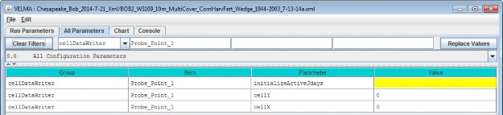
Notice, in passing, that the configuration outline does not automatically get set by the GUI. In theexample screen capture above, it displays "0.0 All Configuration Parameters" - which is not what is beingdisplayed in the parameterization table. This behavior is harmless.
A Cell Data Writer has only 3 parameters, but they must all be set correctly: none are optional.
Set theinitializeActiveJdays parameter to the Julian days that you want data reported for. If you want datareported on every day of the year (this is the most common case) set the initializeActiveJdays value tobe "1-366". (The 366 avoids missing the last day in any leap years that occur in the simulation run.)
If you only want data reported on specific days of the year, enter the Julian Day values as a comma-separatedlist (e.g. "1, 90, 180, 270" reports data on days 1, 90, 180 and 270). You may specify an inclusive range ofdays by separating a start-day value from an end-day value by a dash (e.g. ("1, 90-180, 270" reports data ondays 1, days 90 through 180, and on day 270).
Set the cellX parameter's value to the X-coordinate (i.e. column value) of the cell you want data reportedfor. The valid range is from 0 (the leftmost column) to (number of columns - 1).
Set the cellY parameter's value to the Y-coordinate (i.e. row value) of the cell you want data reportedfor. The valid range is from 0 (the topmost row) to (number of rows - 1).
Cell Data Writer Output is A Comma-Separated Values File
The VELMA simulator creates 1 .csv file for each valid Cell Data Writer parameterization in the simulationconfiguration .xml file.
Cell Data Writer output files are written to the Results Data Location folder. Their filenames always begin withthe prefix "Cell_" and contain the linear index, x-coordinate and y-coordinate of the cell they contain data for(e.g. Cell_i2873_x35_y33.csv).
Each row of a Cell Data Writer output file contains results data for a specific loop, year and Julian day duringthe simulation run. The file's columns contain the specific results. The header row of the file specifies thecontents of each column. Note that some columns contain data that never varies (e.g. the DEM_Elevation(m)column reports the cell's elevation - which is always the same value.)
Cell Data Writers and Spatial Data Writers are Different, but Complementary
A Cell Data Writer reports all the results data available for a specific cell on user-specified days. A SpatialData Writer reports a specific result for all the cells in the simulation watershed on user-specified days. Bothare optional for simulation runs.
23.0 - Spatial Data Writer Items
Spatial Data Writers Report a Simulation Result for Every Cell in the Simulation Grid
Spatial Data Writers are how the VELMA simulation provides spatially-explicit results output.
Spatial Data Writers are layer- and result-specific. You must configure separate spatial data writerparameterizations for each result type you will to output, and for layer of that result type. (E.g. to getspatial data output for the Root Biomass pool layers 3 and 4, you would need to add and configure two separateSpatial Data Writer parameterizations to your simulation configuration.
23.1 - Spatial Data Writer Items by Model Type
Adding a Spatial Data Writer to a Simulation Configuration
Spatial Data Writers are optional. Simulation configurations contain zero instances of them by default. Whenadded, they do not change the simulation computations - they only report results.
To add a Spatial Data Writer to your simulation configuration:
Click the "Edit" "Spatial Data Writer" "Add a New Spatial Writer".
Clicking "Add a New Spatial Writer" opens the Spatial Writer Type and Name dialog which looks like this:
Leave the Spatial Data Writer Type selector set to "SpatialDataWriter".
The Spatial Data Writer Name must be unique (i.e. no other Spatial Data Writer already specified for thissimulation configuration can share the name you specify). Avoid whitespace and punctuation characters (e.g. "("and ")"). As an example, here are a couple of acceptable
names (assuming they're not already in use by another Spatial Data Writer, and the Spatial Data Writer we'readding will report layer 3 root biomass; "Root_Biomass_Layer_3" and "Root_L3".
23.2 - Spatial Data Writer Items Data Sources
Configuring a Spatial Data Writer's Parameters
After you click OK in the Spatial Data Writer's Type and Name dialog, the VELMA GUI adds the Spatial Data Writerto the simulation configuration, and sets the All Parameters tab's filters to display only the parameters of thenewly-added Spatial Data Writer.
Assuming we named our new Spatial Data Writer "Root_Biomass_Layer_3" and clicked OK, the VELMA GUI would looklike this afterwards:
Notice, in passing, that the configuration outline does not automatically get set by the GUI. In the examplescreen capture above, it displays "0.0 All Configuration Parameters" - which is not what is being displayed inthe parameterization table. This behavior is harmless.
A Spatial Data Writer has 7 parameters. None are optional, but one (modelClass) is set automatically bythe GUI, and two others (allowNonWatershedCellValues and trimOutputToWatershedBoundary) default toreasonable values automatically. The remaining 4 parameters specify when this parameterization writes itsspecified spatial data source to file, and what that spatial data source should be.
The Spatial Data Sources Parameter Specifies What Data Is Written
Set the initializeSpatialDataSources parameter to the name of the spatial data source you want to reportresults for. The name is case-sensitive, and must exactly match a name from the Table of Spatial Data Sourcesgiven below. Be careful to avoid leading or trailing whitespace when you enter the spatial data sources name;leading or trailing whitespace can "break" the simulation configuration.
If the spatial data source you choose is multi-layered (see the table), you may (in some instances, must)explicitly specify the layer you wish to write. Specify an explicit layer by adding it, comma-separated, afterthe spatial data source name. The range of valid layer numbers is [1 to 4].
For example: "BIOMASS_ROOT_N" specifies the spatial data source name for biomass root, and"BIOMASS_ROOT_N, 2" specifies biomass root data, layer 2 (enter these, and all parameterization values,without the surrounding quotation (") marks).
23.3 - Spatial Data Writer Items Core Scheduling
The Three "InitializeActive…" Parameters Specify When Data Is Written
Select "23.3 Spatial Data Writer Items Core Scheduling" from the All Parameters drop-down outline selector menu:
Set the initializeActiveLoops, initializeActiveYears and initializeActiveJdays parametervalues to the loop numbers, years and Julian day values that you want the Spatial Data Writer to write resultsfor.
Any specified Loop numbers, years or Julian days that are "beyond bounds" are ignored. I.e. if the simulationconfiguration specifies 3 loops, and the Spatial Data Writer initializeActiveLoops value is set to 4, nodata will ever be written. It is an error to specify negative numbers for Loop, Year or Jday parameters.
[TIP: Setting an initializeActiveLoops value greater than the number of loops the simulation configurationspecifies run is an unintuitive yet handy way to temporarily "shut off" a spatial data writer's output withoutremoving it from the simulation configuration.]
You may specify more than one value by separating values with commas, and you may specify an inclusive range ofvalues by separating the start and end values by dashes.
(E.g. specifying "1, 3-7, 12" for initializeActiveLoops would allow the spatial data writer towrite data in loops 1, loops 3 through 7, and loop 12 - assuming the simulation configuration's numberOfLoopsparameter is set to 12 or more.)
You May Emphasize the Watershed Cells, or Not
When the allowNonWatershedCellValues parameter is set false, its spatial data writer writes anycell value outside the watershed as NO_DATA (the value "-9999.0"). The default value is false,which makes it easy to discern the watershed's delineation in the results file. If you want the results file toinclude every cell value, regardless of whether a given cell is in or out of the watershed delineation, set thisparameter to true.
23.4 - Spatial Data Writer Items Output Map Size
You May Reduce the Dimensions of the Results Grid File
Select "23.4 Spatial Data Writer Items Output Map Size" from the All Parameters drop-down outline selector menu:
When trimOutputToWatershedBoundary is set false, the spatial data writer writes a results file withthe same grid dimensions at the simulation configuration's DEM file. This (default value) make it easy to overlySpatial Data Writer output results on top of the DEM, cover Id map, or soil Id map files. When set totrue, the spatial data writer writes a results file that contains only the cells within the boundingrectangle of the delineated watershed. Depending upon the size of the watershed relative to the overall DEM,this may result in Spatial Data Writer files that are smaller, and easier to review "by hand".
[TIP: Spatial Data Writer output results files are not really meant for "manual" review (e.g. via Notepad or asimilar simple text editor). The choice of the Grid ASCII format was for ease of use with GIS systems, and sothat they could be readily "fed back" into the VELMA Simulator as subsequent initialization input. However,there's nothing wrong with opening a results file in a text editor or spreadsheet for a quick sanity check.]
To reduce the Dimensions of the Results Grid File, click the All Parameters tab's configuration outline dropdownselector and select "23.4 Spatial Data Writer Items Output Map Size".
Spatial Data Writer Output is a Grid ASCII File
The VELMA simulator creates 1 .asc file each time a given Spatial Data Writer is triggered (based on its activeLoops, Years and Jdays parameter settings).
Spatial Data Writer output files are written to the Results Data Location folder. Their filenames always beginwith the prefix "Spatial_" and include the name of the spatial data source and layer number of the data theycontain. The dimensions of the Grid ASCII file match those of the simulation configuration's DEM .asc file,unless the trimOutputToWatershedBoundary parameter was set "true"; in that case, the dimensions of theSpatial Data Writer output file are those of the bounding box of the simulation run's delineated watershed.
Each data value in the output .asc file contains the value for the specified data source for a particular cell,on the particular loop, year and Julian day during the simulation run that the output file was written.
Spatial Data Writers and Spatial Data Writers are Different, but Complementary
A Spatial Data Writer reports a specific result for all the cells in the simulation watershed on user-specifieddays. A Spatial Data Writer reports all the results data available for a specific cell on user-specified days.Both are optional for simulation runs.
Table of Spatial Data Sources
This table lists the available spatial data source name and their layer requirements.
SpatialDataSource Keyword means:
The spatial data source keyword names that are valid values for the
initializeSpatialDataSources parameter value of a Spatial Data Writer's parameterization.
"Type" means:- Accessor = Spatial Data that is not directly stored in a spatial data pool object.
- Direct = Spatial Data that is directly stored in a spatial data pool object.
- Buffered = Spatial Data directly stored in a spatial data pool object, but only when a Spatial Data Writerrequires it.
(In practice, you can ignore what type a spatial data source is when you are configuring a Spatial Data Writer.)
Can Sum Column? means:- N/A = Not applicable
- No = The data cannot be summed: if MultiLayer is "YES" for this type of data, then a layer must beexplicitly provided in the initializeSpatialDataSources parameter value.
- Optional = If MultiLayer is "YES" for this type of data and no explicit layer number is indicated in theinitializeSpatialDataSources parameter value, the value reported will be the sum of all layer values at a givencell's location.
- Always = The spatial data type is MultiLayer, but only summed data is available; no explicit layer value isallowed in the initializeSpatialDataSources parameter value.
| Type |
SpatialDataSource Keyword |
MultiLayer? |
Can Sum Column? |
| Accessor |
AirTemperature |
|
N/A |
| Accessor |
CellWriter |
|
N/A |
| Accessor |
CoverAge |
|
N/A |
| Accessor |
CoverId |
|
N/A |
| Accessor |
DenitrificationLayer |
YES |
No |
| Accessor |
FlowAccumulation |
|
No |
| Accessor |
No3DenitrificationFactorLayer |
YES |
No |
| Accessor |
QetLayer |
YES |
No |
| Accessor |
Rain |
|
N/A |
| Accessor |
Snow |
|
N/A |
| Accessor |
SoilId |
|
N/A |
| Accessor |
SurfaceElevation |
|
N/A |
| Accessor |
TotalBiomassCarbon |
|
Always |
| Accessor |
TotalBiomassNitrogen |
|
Always |
| Accessor |
TotalDetritusCarbon |
|
Always |
| Accessor |
TotalDetritusNitrogen |
|
Always |
| Accessor |
TotalHumusCarbon |
|
Always |
| Accessor |
TotalVolumetricSoilMoisture |
|
Always |
| Accessor |
VolumetricSoilMoistureLayer |
YES |
No |
| Direct |
ACCUMULATED_DEGREE_DAY |
|
N/A |
| Direct |
ACCUMULATED_N_IN |
|
N/A |
| Direct |
ASYMBIOTIC_NITROGEN_FIXED |
|
N/A |
| Direct |
BIOMASS_AG_STEM_N |
|
N/A |
| Direct |
BIOMASS_APEX_TOTAL_STEM_N |
|
N/A |
| Direct |
BIOMASS_BG_STEM_N |
|
N/A |
| Direct |
BIOMASS_DELTA_AG_STEM_N |
|
N/A |
| Direct |
BIOMASS_DELTA_BG_STEM_N |
|
N/A |
| Direct |
BIOMASS_DELTA_LEAF_N |
|
N/A |
| Direct |
BIOMASS_DELTA_ROOT_N |
YES |
Optional |
| Direct |
BIOMASS_HARVESTED_TO_OFFSITE_C |
|
N/A |
| Direct |
BIOMASS_LEAF_N |
|
N/A |
| Direct |
BIOMASS_ROOT_N |
YES |
Optional |
| Direct |
CO2 |
YES |
Optional |
| Direct |
DENITRIFICATION |
YES |
Optional |
| Direct |
DENITRIFICATION_CO2_SCALAR |
YES |
Optional |
| Direct |
DENITRIFICATION_NO3_SCALAR |
YES |
Optional |
| Direct |
DENITRIFICATION_WATER_SCALAR |
YES |
Optional |
| Direct |
DETRITUS_AG_STEM_N |
|
N/A |
| Direct |
DETRITUS_BG_STEM_N |
YES |
Optional |
| Direct |
DETRITUS_BURNED_C |
|
N/A |
| Direct |
DETRITUS_LEAF_N |
|
N/A |
| Direct |
DETRITUS_ROOT_N |
YES |
Optional |
| Direct |
DOC |
YES |
Optional |
| Direct |
DON |
YES |
Optional |
| Direct |
GROUND_SURFACE_TEMPERATURE |
|
N/A |
| Direct |
GROUND_TEMPERATURE_LAYERS |
YES |
Optional |
| Direct |
HUMUS |
YES |
Optional |
| Direct |
LATERAL_INFLOW |
YES |
Optional |
| Direct |
LATERAL_OUTFLOW |
YES |
Optional |
| Direct |
NH4 |
YES |
Optional |
| Direct |
NITRIFICATION |
YES |
Optional |
| Direct |
NO3 |
YES |
Optional |
| Direct |
NPP_C |
|
N/A |
| Direct |
NPP_N |
|
N/A |
| Direct |
STANDING_WATER |
|
N/A |
| Direct |
SURFACE_LATERAL_OUTFLOW |
|
N/A |
| Direct |
SYMBIOTIC_NITROGEN_FIXED_HUMUS |
|
N/A |
| Direct |
SYMBIOTIC_NITROGEN_FIXED_PLANT |
|
N/A |
| Direct |
UPTAKE_N |
YES |
Optional |
| Direct |
WATER_STORED |
YES |
Optional |
| Buffered |
DOC_LATERAL_IN |
YES |
Optional |
| Buffered |
DOC_LATERAL_OUT |
YES |
Optional |
| Buffered |
DOC_LOSS |
YES |
Optional |
| Buffered |
DON_LATERAL_IN |
YES |
Optional |
| Buffered |
DON_LATERAL_OUT |
YES |
Optional |
| Buffered |
DON_LOSS |
YES |
Optional |
| Buffered |
FERTILIZATION_HUMUS_N_ADDED |
|
N/A |
| Buffered |
FERTILIZATION_NH4_ADDED |
|
N/A |
| Buffered |
FERTILIZATION_NO3_ADDED |
|
N/A |
| Buffered |
NH4_LATERAL_IN |
YES |
Optional |
| Buffered |
NH4_LATERAL_OUT |
YES |
Optional |
| Buffered |
NH4_LOSS |
YES |
Optional |
| Buffered |
NO3_LATERAL_IN |
YES |
Optional |
| Buffered |
NO3_LATERAL_OUT |
YES |
Optional |
| Buffered |
NO3_LOSS |
YES |
Optional |
24.0 - Disturbance Items
Understanding how disturbances such as harvest, fire and fertilization affect ecosystem services has been a majormotivation in the development of VELMA. For example, how do disturbances such as forest harvest or theapplication of agronomic fertilizers affect hydrological and biogeochemical processes controlling water qualityand quantity, carbon sequestration, production of greenhouse gases, etc.? Abdelnour et al. (2011, 2013) havealready demonstrated the use of VELMA v1.0 to simulate the effects of forest clearcutting on ecohydrologicalprocesses that regulate a variety of ecosystem services.
With the addition of a tissue-specific plant biomass (LSR) simulator and an enhanced GUI, VELMA v2.0significantly expands the detail, flexibility, and ease of use for simulating disturbance effects. Currentlyavailable disturbance models include:
- BurnDisturbanceModel effects of fire
- GrazeDisturbanceModel effects of grazing
- FertilizeLsrDisturbanceModel effects of fertilizer applications
- HarvestLsrDisturbanceModel effects of biomass harvest
Each of these disturbance models specifies where and when a disturbance event will occur. The Burn, Graze andHarvest models have options for specifying how much of each plant tissue and detritus pool (leaves, stems,roots) will be removed and where it goes (offsite and/or to a specified onsite C and N pools). The Fertilizemodel has options for applying nitrogen as ammonium, nitrate, urea and/or manure.
Requirements for implementing a disturbance model include (1) a grid ASCII map of your watershed and associatedparameter specifications that determine where and when a disturbance will occur, and (2) parameterspecifications that determine which plant biomass and detritus pools will be affected, and the fraction of eachpool burned, grazed or harvested and its destination. Portions of harvested aboveground stem biomass can beexported offsite or transferred to the aboveground stem detritus pool.
Sections 24.1 - 24.3 describe how to select a disturbance model type and specify parameter values to simulatewhere, when and how disturbances occur. You can set up as many disturbance types and events as you may require.
However, we first want to step through an example on the next four pages that illustrate how VELMA's newdisturbance models work. We've chosen the Harvest disturbance model for this example because it illustrates keyconcepts shared by most of the other disturbance models, particularly with regard to how disturbances can bekeyed to the LSR (Leaves-Stems-Root) plant biomass model. We recommend that you look over the details of thisexample before proceeding to sections 24.1 - 24.3.
Above Ground
Below Ground
ILEAIFBl OIMASS
AG STEM Bl OMASS
BG STEM BIOMASS
ROOT Bl OMASS (Layered)
Ha1rvest LSR Disturbance TransferDia1graim1
The harvestFraction parameters determinehow much of each biomass pool isremoved from thatbiomass pool.
Harvest AmountRemovedOffsite
The Harvest LSRDisturbance has 2 sets offraction parameters:harvest, and offsite.. Thereis one harvest and one offsite parameterfor each pool, for atotal of 8individualparameters..Each parameter'svalue must bein the range[0.0, :LOj.

The offsiteFraction parametersdetermine how much of eachharvested amount is removed off site,and how much istransferred toDetritus.

| Leaf Biomass |
| AG Stem Biomass |
| BG Stem Biomass |
| Layer 1 Root Biomass |
| Layer 2 Root Biomass |
| Layer 3 Root Biomass |
| Layer 4 Root Biomass |
| Leaf Harvested |
| AG Stem Harvested |
| BG Stem Harvested |
| Root Harvested |
| Leaf Detritus |
| AG Stem Detritus |
| Layer 1 BG Stem Detritus |
| Layer 2 BG Stem Detritus |
| Layer 3 BG Stem Detritus |
| Layer 4 BG Stem Detritus |
| Layer 1 Root Debitus |
| Layer 2 Root Debitus |
| Layer 3 Root Debitus |
| Layer 4 Root Debitus |
bi omassleafNoff5itefraction
bi omassAgStemNoff5itefractiJn
biomas.sllgStemNharvestFraction
biomas temNoffsiteFractm
,, ,.
OJ GI

-- OQ
biomassRootNoffsitef ract:ion
A- -

Whe1n and Where a Harvest LSR Disturbai1nce Occurs: An Examplle
Harvest LSR Disturbances occur for each loo,p,,year and Julian day the userspecifies
in the initializeActiveloops,initializeActiveYears andinitiaHzeActiveJdaysparameters1values..The user may specify one ormore loops,years and Julian days, orranges of the same..
At least one loop, year and Julianday must be specified..
Here is an example specification/or the tempoml scheduUng pammeters:
initia]lizeActiveloops = 1, 3 (harvestwifloccurinloopsland3)initializeActiveYears = Jl!.969-1980, 1985 ( harvest occurs in years1969through 1980, and in 1985)initia]lizeActiveJdays = 200(harvestoccursonthe2D0thJulianday)
ncols 5
nrows 5
xl]lcorner 0.0000
yl]lcorner 0.0000
ce]llsize 10.0
ooverSpecieslndexFileMapName
=examplCoverlDFile.asc

The disturbance ,only ,occurs for the co1ver types the user specifies
in the initializeCoverids parameter1s values;multiple cover Idnumbers may be specified,but not ranges ofnumbers.
The disturbance usesthe specified cover Ids,plus the data in thecover id map specifiedby the coverSpeciesindexFi] eMapNameparameterto determinewhich cells shouldbe harvested.
| Here is an example specification/or the spatial/cov:er parameters: |
1 |
1 |
1 |
3 |
3 |
| initia]lizeCoverids = 3, 4 |
2 |
1 |
1 |
3 |
3 |
| coverSpeciesindexFi]leMapName = examp] eCoverIDFile.asc |
2 |
2 |
2 |
2 |
1 |
| |
4 |
4 |
2 |
|
|
| With the above parameterization, and the exampleCoverlo:File.asc contents at right, harvest will occur in the cells highliglnted in green. |
4 |
4 |
1 |
|
|
The disturbance ,occurs.,o,nlyfor the .specifiedco,ver types at ,o,r above aspecified age.
The user specifies this "lowest age limit" in theageThresho ]ld parameter value.The value must be an positiveinteger, or zero- zero specifies any age is acceptable.
Here is an example specification/or the ,ag.e limitparameter:
age Th re sh old = 13 5 ( harvest wifl occur only forcells whose cover is 135 or more years old.)
Fillteri1ng:Additio:na1IICo1ntroll For Wherea1Harvest LSR Disturbance Occurs
Harvest LSR Disturbancesmay (o,p,tionally) belimited t,o specific.areasbyspecifying aFilter Map,
In order i\:o usefiltering, the usermust have define aFilter Map: aGrid Ascii map withID numbers for celldata values. The userspecifies this map's name as thefiJ ..terMapFu llNameparametervalue..
(!Leaving the f H terMap FuJI.JI.Na1111e unspecifiedindicates "No!Filtering" to theHarvest ILSRDisturbance.}
When a filter file isspecified thedisturbance,only ,occurs forthe filterIdscellsthe userspecifies
in the initializeFil te rld sparameter's values;multiple filter Id values may bespecified, but not numberranges. Thedisturbance uses thespecified filterIds, plus the data inthe filter mapspecified by the f i I terMap Fu jJ_IN a1TI1eparameter to determinewhich cells areeligible forharvested..
Her:e js an example spedficationfor the spatial/coiterparameters:
initializeFilterlds =1, 2 filterMapFuUNa1111e =exampleFilterIDFi]l.e.asc
Note: these examplefilter Id vafues,and the vafues in theexampfeFifter1DFife have norefation to the covertds.
Using this filtering schemeand the co,ver IDexamp,le from theprevious slide, theselection logic is(:[} IFind the subsetof cells in the filtermap that match thefilter ids specifiedbyinitializeFilterlds.(2} Consider otherspatial-selection(e.g..coverIds) based only onthat subset ofcefls.

ncojJ_s 5
nrmoJs 5
xllco rner 0. 0000
yllcorner 0.0000
celJl.size 10.0
0 0 0 0 0
0 1 1 1 0
0 2 2 2 O
0 1 1 1 0
filterMapFullName
= examplFilerlDFile.asc

nco]l.s 5
nroioJs 5
xllcorner 0.0000
yllcorner 0.0000
cel]l.size 10 .0
1 1
2 1
2 2
4 4
4 4
1
1
2
2
1
3 3
3 3
2 1
1
ooverSpecieslndexFileMapName
examplCoverlDFile.asc
The Map files to the right show the example:
- Cells eligible forconsideration based on the filter map andspecified filterIds are highlightedin reen.
- That subset of cells is then examined via the cover Id map andspecified cover Ids.
Cells eligible forharvest based onfiltering,followed by cover idselection are further hi hli htedi blue.
Note: Othercriteria (Le..age) might also applyafter filtering to thefiltered subset ofcells..
Note: Remember! Idnumbers in the filtermap are not related toId numbers in thecover map. (i.e. filterid 2 is not equal tocover id 2)
24.1 - Disturbance Items by Model Type
To begin, you need to select the disturbance model you want by clicking Edit Disturbances Add aDisturbance:
You will see the following drop-down menu for selecting a Disturbance Model. To further demonstrate the harvestdisturbance example illustrated under section 24.0, we select the HarvestLsrDisturbanceModel:
Now choose a name for your HarvestLsrDisturbanceModel and type it the "Disturbance Name" dialog box, forexample, "ForestClearcut":
After selecting the HarvestLsrDisturbanceModel and giving it a disturbance name, go to the All Parametersdrop-down menu and select "24.1 Disturbance Items by Model Type". You should see the following:

Select "24.0 - Disturbance Items" from the All Parameters drop-down menu to see a list of all parametersassociated with the HarvestLsrDisturbanceModel. In the screenshot below, we have specified parametervalues for the HarvestLsrDisturbanceModel disturbance we named "ForestClearcut":
Parameter Definitions
| ageThreshold |
Applicable cover must be greater or equal to the specified ageThreshold (in integer years) to beharvested. Defaults to 0 -- i.e., any otherwise- applicable cell is harvested regardless of age. |
| biomassAgStemNharvestFraction |
The fraction [0.0 1.0] of available above-ground stem biomass harvested i.e. converted from biomass above-ground stem to above-ground stem detritus and/or removedfrom the simulation. |
| biomassAgStemNoffsiteFraction |
The fraction [0.0 1.0] of harvested above-ground stem biomass removed offsite, i.e., removed from the cell and the simulation. |
| biomassBgStemNharvestFraction |
The fraction [0.0 1.0] of available below-ground biomass harvested i.e. converted from biomass below-ground to below-ground detritus and/or removed from thesimulation. |
| biomassBgStemNoffsiteFraction |
The fraction [0.0 1.0] of harvested below-ground stem biomass removed offsite. i.e. removed from the cell and the simulation. |
| biomassLeafNharvestFraction |
The fraction [0.0 1.0] of available leaf biomass harvested i.e. converted from biomass leaf to leaf detritus and/or removed from the simulation. |
| biomassLeafNoffsiteFraction |
The fraction [0.0 1.0] of harvested leaf biomass removed offsite. i.e. removed from the cell and the simulation. |
| biomassRootNharvestFraction |
The fraction [0.0 1.0] of available root biomass harvested i.e. converted from biomass root to root detritus and/or removed from the simulation. |
| biomassRootNoffsiteFraction |
The fraction [0.0 1.0] of harvested root biomass removed offsite. i.e. removed from the cell and the simulation. |
| filterMapFullName |
The fully-qualified (path/name.ext) name of a Grid ASCII (.asc) file containing (integer)filter Ids. When left unspecified (default) indicates that filtering will be turned off. Note: if the value forthis parameter is not a fully-qualified name the simulator engine will prefix the specified input data locationroot and name to this parameter's value to create a default fully- qualified name. |
| initializeActiveJdays |
The comma-separated list of Julian days on which the disturbance occurs. Entries in thelist may be either single Julian days or start-end (dash-separated) ranges. A valid Julian day is any positivewhole number between 1 and 366 (however day 366 is ignored in non-leap years). For example this text triggersoutput on days 1 365 and between 30 and 90inclusive: 1 30-90 365 |
| initializeActiveLoops |
The comma-separated list of loop index numbers (range [1 nth-Loop]) in which thedisturbance occurs. Entries in the list may be either single loop numbers or start-end (dash-separated) ranges.A valid loop index number is any positive whole number between 1 and the number of loops specified for thesimulation run. For example in a simulation run for 10 loops this text triggers output in loops 1 3 through 5and 10 inclusive: 1 3-5 10 |
| initializeActiveYears |
The comma-separated list of Years in which the disturbance occurs. Entries in the list maybe either single years or start-end (dash-separated) ranges. A valid year is any positive whole number (but the user isexpected to choose years within the simulation run!). For example in a simulation run between 1995 and 2010,this text triggers output in 2000 through 2005 inclusive: 2000-2005 |
| initializeAgeModification |
(Optional) Specifies the number of years to subtract or add to the age of the cover in affected cells when the disturbance occurs. To add n years to a cell'scover age prefix a plus (+) sign to the number n. To subtract n years to a cell's cover age prefix a minus(- ) sign to the number n. To set the cell's cover age to a specific number of years specify a number n withoutany sign prefix. Subtraction halts at zero (e.g. a cover age of 7 given -10 as the modifier will result in 0 not-3 as the modified age). |
| initializeCoverIds |
The Cover Species Id numbers that are affected by this disturbance model. Specify acomma-separated sequence of Cover Species uniqueId numbers. |
| modelClass |
The disturbance model's actual Java class name |
Select "24.2 - Disturbance Items Core Scheduling" to focus the All Parameters table on the parameters forspecifying when disturbance events occur:

Parameter Definitions:
these parameters are defined under the All Parameters screenshot for Select "24.0 -Disturbance Items", above.
Select "24.3 -- Disturbance Items Spatial Specifiers" to focus the All Parameters table on the parametersfor specifying where disturbance events occur:
Parameter Definitions:
these parameters are defined under the All Parameters screenshot for Select "24.0 -Disturbance Items", above.
Calibration Notes
Make sure that the disturbance models you have set up are working correctly. Are disturbance events occurringwhen and where you want them to, are the correct amounts of biomass being harvested/burned/grazed, and are thecorrect amounts and forms of fertilizer being applied. For a first check, click VELMA's GUI "Chart" tab at anytime during a simulation, then click the
drop-down menu button located near the lower left corner of the screen, then select an appropriate spatial datadisplay option (see section "25.0 - Runtime Chart Display Scale" for details").
For example, by selecting the "Harvest Spatial Data" menu item you can see daily and year-to- date summaries ofharvest events and their effects on various biomass tools. The two figures below show year-end summaries ofharvest events for consecutive years, 2000 and 2001. In 2000 there were no harvests (top figure: top row, middleframe). In 2001 there were several fairly large harvest events (bottom figure: top row, middle frame). Acomparison of the other frames in top and bottom figures reveals changes in plant biomass, detritus, soilorganic matter, and cover age following harvest events.
An examination of VELMA's daily and annual output files (csv format) provides a more quantitative check ofdisturbance events.
Screenshot of runtime "Harvest Spatial Data" display.
25.0 - Runtime Chart Display Scale
VELMA has powerful visualization capabilities built into it, hence the model's name - Visualizing Ecosystem LandManagement Assessments. To see a list of visualization options, select the VELMA GUI "Chart" tab at any timeduring a simulation, then click the drop-down menu button ( 
For example, the "Soil Moisture Spatial" visualization displays runtime daily changes in spatial patterns of soilmoisture (% saturation) for four soil layers for a 20-ha watershed on the day currently being simulated. Ascreenshot for a particular day is shown below. The lower third of display is a running graphical summary ofdaily changes in soil moisture per soil layer from January 1 up to the date currently simulated. A new view isgenerated at the beginning of each calendar year). A variety of hardwired display formats are used for differentoutput variables.
You can save daily screenshots as .png files by clicking the "Snapshot" button (located near the middle of themenu bar at the bottom of the screenshot, above). You can also save a series of daily images by clicking the"Capture Images Daily" checkbox. After a simulation is completed, third-party software can be used to stitchtogether a time series of saved .png screenshots to make a time-lapse movie. However, note that saving daily.png images for long simulations can fill large amounts of disk space.
You can use the VELMA GUI's All Parameters tab to review and change the settings for display parameterscontrolling minimum (min) and maximum (max) values for the y-axis and range color bar. To locate all displayparameters, select the "25.0 Runtime Chart Display Scale" item from the All Parameters drop-down menu button:

Different runtime display charts use different subsets of the display parameters. Unfortunately, nothing listedunder "All Parameters 25.0 Runtime Chart Display Scale" indicates which display parameters belong to aparticular runtime display chart. Therefore, we have constructed the table below so that users can associateruntime display chart names with the display parameters used by that chart.
For example, if you want to adjust VELMA's "Annual Plot" display for soil humus, you would find "Annual Plot"under the "Display Selector Name" column in the table below, copy "maxHumusDayDisplay" and paste it inthe "Parameter" search window in the VELMA GUI's All Parameters view. Hit your keyboard's "Enter" key and youshould see "maxHumusDayDisplay" under "Parameter column. Specify the value you want. Repeat for theprocess for the "minHumusDayDisplay" parameter. [Note: you cannot change the display parameterizationsduring a simulation run. Currently, the VELMA GUI does not allow runtime display scales to change dynamicallyduring simulation runs. Prior to starting a simulation, you must set the display parameters for any chart youwill use during a simulation.]
| Display Selector Name |
MIN Display Setting |
MAX Display Setting |
| <cover> + Denitrification Daily-Linear |
( always zero ) |
maxDenitrificationDaySpatialDis play |
| ( always zero ) |
maxNo3DenitDaySpatialDisplay |
| ( always zero ) |
maxCo2DenitDaySpatialDisplay |
| Annual Plot |
( always zero ) |
maxDonLossYearFinalDisplay |
| ( always zero ) |
maxDocLossYearFinalDisplay |
| ( always zero ) |
maxNppYearSumDisplay |
| minBiomassYearFinalDisplay |
maxBiomassYearFinalDisplay |
| minHumusDayDisplay |
maxHumusDayDisplay |
| minLitterDayDisplay |
maxLitterDayDisplay |
| minNepYearSumDisplay |
maxNepYearSumDisplay |
| Burn Spatial Data |
minBiomassAgStemDayDisplay |
maxBiomassAgStemDayDisplay |
| minBiomassLeafDayDisplay |
maxBiomassLeafDayDisplay |
| minDetritusAgStemDayDisplay |
maxDetritusAgStemDayDisplay |
| minDetritusLeafDayDisplay |
maxDetritusLeafDayDisplay |
| minHumusDayDisplay |
maxHumusDayDisplay |
| minLitterDayDisplay |
maxLitterDayDisplay |
| Calibration Annual Nutrients |
( always zero ) |
maxNh4LossYearSumDisplay |
| ( always zero ) |
maxNo3LossYearSumDisplay |
| ( always zero ) |
maxDonLossYearSumDisplay |
| minDocLossYearSumDisplay |
maxDocLossYearSumDisplay |
| Calibration Daily Nutrients |
( always zero ) |
maxNh4LossDayDisplay |
| ( always zero ) |
maxNo3LossDayDisplay |
| ( always zero ) |
maxDonLossDayDisplay |
| ( always zero ) |
maxDocLossDayDisplay |
| Calibration Hydrology |
( always zero ) |
maxRainDayDisplay |
| ( always zero ) |
maxRunoffDayDisplay |
| ( always zero ) |
maxSubRunoffDayDisplay |
| ( always zero ) |
maxEtDayDisplay |
| minHydroYearSumDisplay |
maxHydroYearSumDisplay |
| CO2 Pool Spatial |
( always zero ) |
maxCo2DaySpatialDisplay |
| Daily Nitrogen Fixation |
( always zero ) |
maxNinDayDisplay |
| ( always zero ) |
maxPlantUptakeSpatialDisplay |
| ( always zero ) |
maxSymbioticNfixedDayDisplay |
| ( always zero ) |
maxAsymbioticNfixedDayDisplay |
| ( always zero ) |
maxDonLossDayDisplay |
| ( always zero ) |
maxTotalNLossDayDisplay |
| ( always zero ) |
maxNitrificationDaySpatialDispl ay |
| ( always zero ) |
maxDenitrificationDaySpatialDisplay |
| Default Layer 1 - 4 |
( always zero ) |
maxDonLossDayDisplay |
| ( always zero ) |
maxDocLossDayDisplay |
| ( always zero ) |
maxRainDayDisplay |
| ( always zero ) |
maxRunoffDayDisplay |
| Denitrification Daily-Spatial |
( always zero ) |
maxDenitrificationDaySpatialDisplay |
| Denitrification Daily-Spatial 1 - 4 |
( always zero ) |
maxDenitrificationDaySpatialDis play |
| ( always zero ) |
maxNo3DenitDaySpatialDisplay |
| ( always zero ) |
maxCo2DaySpatialDisplay |
| DOC Pool Spatial |
( always zero ) |
maxDocSpatialDisplay |
| DON Pool Spatial |
( always zero ) |
maxDonSpatialDisplay |
| Evapotranspiration |
( always zero ) |
maxEtDayDisplay |
| Harvest Spatial Data |
minBiomassDayDisplay |
maxBiomassDayDisplay |
| minHumusDayDisplay |
maxHumusDayDisplay |
| |
minLitterDayDisplay |
maxLitterDayDisplay |
| Leaf Stem Root Daily Data |
minBiomassAgStemDayDisplay |
maxBiomassAgStemDayDisplay |
| minBiomassBgStemDayDisplay |
maxBiomassBgStemDayDisplay |
| minBiomassLeafDayDisplay |
maxBiomassLeafDayDisplay |
| minBiomassRootDayDisplay |
maxBiomassRootDayDisplay |
| minDetritusAgStemDayDisplay |
maxDetritusAgStemDayDisplay |
| minDetritusBgStemDayDisplay |
maxDetritusBgStemDayDisplay |
| minDetritusLeafDayDisplay |
maxDetritusLeafDayDisplay |
| minDetritusRootDayDisplay |
maxDetritusRootDayDisplay |
| Leaf Stem Root Layer Details Daily Data |
minBiomassRootLayersDayDisplay |
maxBiomassRootLayersDayDisplay |
| minDetritusBgStemLayersDayDisplay |
maxDetritusBgStemLayersDayDispl ay |
| minDetritusRootLayersDayDisplay |
maxDetritusRootLayersDayDisplay |
| minHumusLayersDayDisplay |
maxHumusLayersDayDisplay |
| LSR Summary Spatial |
( always zero ) |
maxNppDayDisplay |
| minBiomassDayDisplay |
maxBiomassDayDisplay |
| minHumusDayDisplay |
maxHumusDayDisplay |
| minLitterDayDisplay |
maxLitterDayDisplay |
| NH4 Pool Spatial |
( always zero ) |
maxNh4SpatialDisplay |
| Nitrification Daily-Spatial |
( always zero ) |
maxNitrificationDaySpatialDisplay |
| Nitrogen Fixation Daily- Spatial |
( always zero ) |
maxSymbioticNfixedDayDisplay |
| ( always zero ) |
maxAsymbioticNfixedDayDisplay |
| NO3 Pool Spatial |
( always zero ) |
maxNo3SpatialDisplay |
| Plant Uptake Spatial |
minPlantUptakeSpatialDisplay |
maxPlantUptakeSpatialDisplay |
| Productivity Spatial |
( always zero ) |
maxNppDayDisplay |
| ( always zero ) |
maxNh4SpatialDisplay |
| ( always zero ) |
maxNo3SpatialDisplay |
| minBiomassDayDisplay |
maxBiomassDayDisplay |
| Snow Dynamics Spatial |
( always zero ) |
maxRainSpatialDisplay |
| ( always zero ) |
maxSnowSpatialDisplay |
| ( always zero ) |
maxSnowDepthSpatialDisplay |
| ( always zero ) |
maxSnowMeltSpatialDisplay |
| minAirTSpatialDisplay |
maxAirTSpatialDisplay |
| Standing Water |
( always zero ) |
maxRainDayDisplay |
| ( always zero ) |
maxRunoffDayDisplay |
| ( always zero ) |
maxStandingWaterDayDisplay |
| Temperature Data |
minAirTDayDisplay |
maxAirTDayDisplay |
| Time Series |
( always zero ) |
maxDonLossDayDisplay |
| ( always zero ) |
maxDocLossDayDisplay |
| ( always zero ) |
maxRainDayDisplay |
| ( always zero ) |
maxRunoffDayDisplay |
| minAirTDayDisplay |
maxAirTDayDisplay |
| minBiomassDayDisplay |
maxBiomassDayDisplay |
| minHumusDayDisplay |
maxHumusDayDisplay |
| minLitterDayDisplay |
maxLitterDayDisplay |
| VSA Spatial and Hydro Linear |
( always zero ) |
maxRainDayDisplay |
| ( always zero ) |
maxRunoffDayDisplay |
| Weather Summary Spatial |
( always zero ) |
maxRainDayDisplay |
| ( always zero ) |
maxRainSpatialDisplay |
| ( always zero ) |
maxSnowSpatialDisplay |
| ( always zero ) |
maxSnowMeltSpatialDisplay |
| minAirTDayDisplay |
maxAirTDayDisplay |
| minAirTSpatialDisplay |
maxAirTSpatialDisplay |